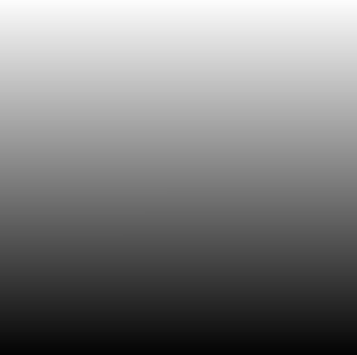
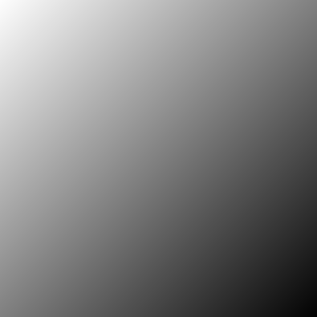

ShaderToy常见代码解释 (收录中)
在编程这一方面, 个人认同这一个观点: 要想实现某个东西最有效的办法是抄别人的代码, 并且要抄得明白.
不要看这句话看似很 low, 它里面其实有这么一些对应关系, "抄得明白"对应知道原理, "抄别人代码"对应实践.
对于 ShaderToy 也是一样的, 你想像那些前辈一样实现酷炫的效果, 就得脸皮厚一点去 抄明白 他们的代码, 大胆承认抄别人的代码.
想做到 抄明白 得了解代码使用了哪些知识, 这些知识就像是积木一样, 我们要做的利用这些积木搭出自己想要的东西,
这篇笔记的内容就是介绍这些常用的积木, 它们基本上是数学知识, 属于线性代数, 微积分以及概率论的范畴,
不过本文并不是要成为数学的入门课, 而是学习如何用它们解决图形上的一些问题,
本文会在一些地方尽量说明引用了什么数学定理, 方便读者(包括我本人)遇到不会的数学知识可以自行去搜索学习, 尽可能地给初学者提供一个系统的入门指南.
这里有很多内容来自于 The Book of Shaders 这本书(截止目前为止还没写完), 以及 Inigo Quilez 的文章, 相当一部分来自于 The Art of Code 频道, 少部分参考了 Programming Tricks in ShaderToy / GLSL.
Inigo Quilez 的文章要求读者有前面提到的数学基础, 所以读不懂不要气馁, 等掌握了基础再来读即可.
有很多时候需要作图以及计算等式, 所以个人建议最后学一两个这方面的工具, 简单作图的话推荐 GraphToy, 想要作一些复杂的图以及公式计算则推荐 Maxima.
另外, 如果你不喜欢在 ShaderToy 上编码而是喜欢本地上实验, 那么推荐使用 glslViewer, 和 glslViewer 的差别基本在于内置 Uniforms 名字不太一样,
并且比其 ShaderToy 还支持更高版本的 GLSL, 你想更加全面得接触 GLSL 那么 glslViewer 更好.
推荐完工具后就是个人的数学学习心得了 (仅供参考, 不作标准), 个人认为学数学应 尽可能 地对给出定理刨根问底, 具体做法是:
理解定理 \(P\) 的证明思路, 知道每一个证明步骤是以哪些定理/公理作为根据, 所以在这个过程中可能也会遇到一些陌生的定理 \(L\),
如果定理 \(L\) 的定义影响到你对定理 \(P\) 证明的理解, 那么以同样做法去理解定理 \(L\) 的证明思路, 再回过头来接着理解定理 \(P\) 的证明;
否则就默认定理 \(L\) 是正确的, 继续理解定理 \(P\) 的证明.
简单来说, 学数学是一个递归过程, 这就会为什么数学里的公理是不可证明的, 不可能一直刨根问底的.
理解定理的证明思路, 是为了理解定理诞生的动机及思想, 只有这样避免死记硬背, 为后面的运用自如打下基础.
复杂理论背后的往往是简单想法, 不过想找到这个简单想法可不简单.
最后就是对于知识的运用, 当到了知道哪些知识可以解决什么问题, 以及看到问题可以联想到用哪些知识解决, 就说明到达运用自如的地步了, 而这种程度的联想就是俗称的灵感.
想要到达运用自如的境界需要经常做题练习, 正如马斯洛锤子定理: 拿着锤子的人看什么都像钉子, 当拿的工具多了, 看到的景象就不一样了.
所以, 学数学依靠的是耐心和理解.
对于抄代码也一样, 先找出这段代码背后是哪些知识原理, 解决什么类型的问题, 然后抄到形成条件反射随手就能写出来的程度,
不是默出来啊, 严谨死记硬背, 抄到即便别人写法不太一样但也能马上看出来是抄过的代码, 抄到明白每一个参数变量的作用, 可以按照自己的意愿对代码进行调整.
常见的困惑
GLSL 矩阵储存方式
默认情况下, GLSL 使用列优先储存矩阵. 假设这是一个用于左乘的矩阵: \(\left( \begin{array}{c} a & b \\ c & d \end{array} \right)\),
那么在 GLSL 里应该这么定义:
mat2(a, c,
b, d);
常见的 UV 计算
UV - 计算片元在屏幕上所对应的 UV 坐标
写于 2024/3/3
OpenGL 的 UV 坐标是一个左下角为原点, 向上为 \(U\), 向右为 \(V\), 且范围都是 \([0, 1]\) 的坐标系.
在 ShaderToy 中, 人们把整个画面看作是一张大贴图, 片元就是该大贴图上面的一个纹理像素(texel).
片元理所当然地有一个 UV 坐标, 可以通过片元坐标 \(gl\_fragCoord\) 和屏幕分辨率 \(iResolution\) 计算出来.
vec2 uv = gl_FragCoord.xy / iResolution.xy; // [0.0, 1.0]
当要注意的是, 为了方便作图, 片元的 UV 并非就要固定在 \([0.0, 1.0]\) 之间.
有时候为了实现某些目的, 需要对 UV 做一些列变换.
比如把纹理坐标空间的原点从左下角平移到中心,
vec2 uv = (gl_FragCoord.xy / iResolution.xy) - 0.5; // [-0.5, 0.5]
这一步开始已经把一个屏幕平均分成 4 份了.
\([-0.5, 0.5]\) 分别在 \(u\) 和 \(v\) 两个方向上分为 \([-0.5, 0]\) 和 \([0, 0.5]\) 两个区间.
因此, \(2 \times 2 = 4\) 份.
把新的纹理坐标空间的范围拓展到 \([-1.0, 1.0]\),
vec2 uv = 2.0 * ((gl_FragCoord.xy / iResolution.xy) - 0.5); // [-1.0, 1.0] // 可简化成 vec2 uv = 2.0 * (gl_FragCoord.xy / iResolution.xy) - 1.0;
到目前为止, 我们的 UV 计算都是针对屏幕分辨率比例是一比一的情况.
在非一比一情况下绘制个圆形会导致圆变椭圆, 这是因为 \(UV\) 两分量的范围比例和屏幕分辨率比例对不上, 导致出现拉伸的情况.
解决方法很简单, 以屏幕分辨率比例为准, 对 \(UV\) 长的那一方维度分量进行补偿, 使得 \(UV\) 分量的范围比例和屏幕分辨率比例一致.
原本的 \(UV\) 范围比例固定是 \(\frac{x_{uv}}{y_{uv}} = 1\), 而屏幕分辨率比例是 \(\frac{x_{iResolution}}{y_{iResolution}}\),
如果屏幕是 \(X\) 轴比较长, 那么 \(UV\) 就要针对 \(x\) 分量进行补偿才能和屏幕分辨率一致: \(\frac{x_{uv} \times \frac{x_{iResolution}}{y_{iResolution}}}{x_{uv}} = 1 \times \frac{x_{iResolution}}{y_{iResolution}} = \frac{x_{iResolution}}{y_{iResolution}}\),
如果屏幕是 \(Y\) 轴比较长, 那么 \(UV\) 就要针对 \(y\) 分量进行补偿才能和屏幕分辨率一致: \(\frac{x_{uv}}{y_{uv} \times \frac{y_{iResolution}}{x_{iResolution}}} = 1 \div \frac{y_{iResolution}}{x_{iResolution}} = \frac{x_{iResolution}}{y_{iResolution}}\).
你可能会问既然要保证两者比例一样, 为什么还要讨论哪根轴较长呢?
从公式上来看, 如果 \(Y\) 比较长的话, 用 \(1 \times \frac{x_{iResolution}}{y_{iResolution}}\) 来计算不也是一样可以保证两者比例一致吗?
但是别忘记了 \(UV\) 本身就是依赖 \(iResolution\) 计算出来的, 因此这个数字 \(1\) 本身就依赖于 \(iResolution\), 下面的代码可以证明这点.
vec2 uv = 2.0 * (gl_FragCoord.xy / iResolution.xy) - 1.0; // [-1.0, 1.0] if (iResolution.x > iResolution.y) { // 如果屏幕的 X 轴比 Y 轴长 uv.x *= iResolution.x / iResolution.y; } else { // 如果屏幕的 Y 轴比 X 轴长, 或两者相等 uv.y *= iResolution.y / iResolution.x; }
到目前为止我相信大部分人都能看得懂, 但 ShaderToy 上的例子大部分都是把这段代码简化成一句的.
现在来逐个分析,
vec2 uv = 2.0 * (gl_FragCoord.xy / iResolution.xy) - 1.0; /* 等同于 uv = (2.0 * gl_FragCoord.xy) / iResolution.xy - iResolution.xy / iResolution.xy uv = (2.0 * gl_FragCoord.xy - iResolution.xy) / iResolution.xy 同时可以拆开来看 uv.x = (2.0 * gl_FragCoord.x - iResolution.x) / iResolution.x uv.y = (2.0 * gl_FragCoord.y - iResolution.y) / iResolution.y */ if (iResolution.x > iResolution.y) { // 如果屏幕的 X 轴比 Y 轴长 uv.x *= iResolution.x / iResolution.y; /* 等同于 uv.x = (2.0 * gl_FragCoord.x - iResolution.x) / iResolution.x * iResolution.x / iResolution.y uv.x = (2.0 * gl_FragCoord.x - iResolution.x) / iResolution.y 如果和 y 分量合并一起计算, 那么就是 uv = (2.0 * gl_FragCoord.xy - iResolution.xy) / iResolution.y */ } else { // 如果屏幕的 Y 轴比 X 轴长, 或两者相等 uv.y *= iResolution.y / iResolution.x; /* 等同于 uv.y = (2.0 * gl_FragCoord.y - iResolution.y) / iResolution.y * iResolution.y / iResolution.x uv.y = (2.0 * gl_FragCoord.y - iResolution.y) / iResolution.x 如果和 x 分量合并一起计算, 那么就是 uv = (2.0 * gl_FragCoord.xy - iResolution.xy) / iResolution.x */ } /* 综合两种情况来看就是 uv = (2.0 * gl_FragCoord.xy - iResolution.xy) / min(iResolution.x, iResolution.y) */
所以, ShaderToy 上有不少例子都是有这一句(或类似的).
vec2 uv = (2.0 * gl_FragCoord.xy - iResolution.xy) / min(iResolution.x, iResolution.y);
在大部分的 ShaderToy 例子中, UV 计算是基础且重要的东西, 这个小节所介绍的 UV 计算其实是 UV 补偿, 解决画面拉伸的问题.
还会介绍一些其它的 UV 计算来实现不同的效果.
UV计算 - 平铺(tiling)
这里的平铺就是和计算机的桌面壁纸里的平铺是一个概念: 当一张壁纸不能把桌面铺满, 那么就用重复若干张壁纸铺满桌面.
Shader 编程也可以平铺.
我们可以换个角度来思考, 默认情况下, 一个像素所对应 \(UV\) 坐标是 gl_FragCoord.xy / iResolution.xy, 分量的范围是 \([0, 1]\), 这是针对与整个屏幕来说的.
想要平铺, 我们只要在屏幕的范围内复制多几个 \([0, 1]\) 范围的 \(UV\) 坐标空间就好了.

Figure 1: 重复了 4 个 \([0, 1]\) 范围的 \(UV\) 坐标空间
话虽如此, 具体应该怎么做呢? 虽然没有标准答案, 但还是有基本法的.
从原本映射关系来看是 \([x_{min}, x_{max}] \rightarrow [0, 1]\) 和 \([y_{min}, y_{max}] \rightarrow [0, 1]\),
想要在更小的屏幕范围内应该一个 \(UV\) 空间, 只要改变 \(x_{max}\) 和 \(y_{max}\) 的值就可以了.
对于看左上角的 \(UV\) 空间, 可以通过 gl_FragCoord.xy / (iResolution.xy / 2), 这里就是把 \(x_{max}\) 和 \(y_{max}\) 分别改变为 iResolution.x / 2 和 iResolution.y / 2.
接下来的问题就是如何让构造出另外三个 \(UV\) 空间呢?
因为当 gl_FragCoord.x 超出 iResolution.x / 2 时, gl_FragCoord.x / (iResolution.x / 2) 的值就是大于 1 的浮点数,
我们的目标是让其它三个 \(UV\) 空间的分量范围为 \([0, 1]\), 方法很简单, glsl 的内置函数 fract 可以获取浮点数的小数部分,
比如 fract(1.1) 等于 0.1, fract(2.1) 也是等于 0.1, 从而形成一个以 0 到 0.999… (没到 1) 为一个周期的周期序列.
其实可以把第下一个周期头部的 0 看作是上一个周期的 1.
原因很简单, 假设现在经过划分得到两个周期, 那么
fract(x)会得到这样的一个序列(, 以 0.1 为步长):
[0, 0.1, 0.2, ..., 0.9], [0(1), 0.1, 0.2, ..., 0.9], 0(2)
这样就可以让其它 \(UV\) 空间的分量范围也处于 \([0, 1)\) 之间,
综上所述, \(UV\) 的计算方式就变成这样:
int div_num = 2; vec2 uv = fract(gl_FragCoord.xy / (iResolution.xy / div_num)); /* or vec2 uv = fract(gl_FragCoord.xy / iResolution.xy * div_num); */
这并非唯一的方法, 事实上 只要是周期函数都可以获取周期序列来进行平铺, 比如 cosine, sine 和 modulo, 等等.
cosine 和 sine 的用法和 fract 差不多, 基本上把 fract 替换就可以了:
int div_num = 2; // 别忘记控制好周期 vec2 uv = cos(gl_FragCoord.xy / (iResolution.xy / div_num * 2 * PI)); /* or vec2 uv = fract(gl_FragCoord.xy / iResolution.xy * div_num * 2 * PI); */
模运算(modulo)有一点不同:
int div_num = 2; float period = 1.0; vec2 uv = mod(gl_FragCoord.xy / (iResolution.xy / div_num), period); /* or vec2 uv = mod(gl_FragCoord.xy / iResolution.xy * div_num, period); */
并且模运算的周期可以用来对 \(UV\) 空间进行等比缩放, 如果把 period 定义为 2.0, 那么 \(UV\) 的分量范围就是 \([0, 2]\).
GLSL 内置函数
函数 - smoothstep
从这里开始的后面几个章节都会介绍一些常用(或者一些光看名字不知道做啥)的
GLSL内置函数, 不过并不会介绍一些典型的数学函数, 比如sin/cos/atan这些,这些直接去看数学书就好, 介绍它们会拉长笔记的篇幅.
这些内置函数均可用在
Fragment Shader中.
\(smoothstep\) 函数的定义等价如下:
/* genType clamp(genType x, genType minValue, genType maxValue) equals min(max(x, minValue), maxValue) */ genType smoothstep(genType edge0, genType edge1, genType x) { genType t = clamp((x - edge0) / (edge1 - edge0), 0.0, 1.0); return t * t * (3.0 - 2.0 * t); }
\(t\) 是从 \(edge0\) 到 \(edge1\) 的插值, 结果在 \([0, 1.0]\) 内.

Figure 2: x, edge0 以及 edge1 三者的关系
\(smoothstep\) 的返回值 \(f(t) = 3t^{2} - 2t^{3}\) 是一个最高次项为 3 的多项式函数,
其一阶导数为 \(f^{'}(t) = 6t - 6t^{2} = 6t(1 - t)\), 令 \(f^{'}(t) = 0\) 可以求得两个驻点的 \(t\) 分量: \(0\) 和 \(1\).
再求出二阶导数 \(f^{''}(t) = 6 - 12t\), 分别把驻点的 \(t\) 分量分别代入到其中, 分别得到 \(f^{''}(0) = 6 > 0\) 和 \(f^{''}(1) = -6 < 0\).
也就是说函数 \(f(t)\) 在 \(t = 0\) 为极小值, 在 \(t = 1\) 为极大值, \(t\) 在 \([0, 1]\) 这个区间内是单调递增的.
又刚好 \(t \in [0, 1.0]\), 因此, \(f(t)\) 最小值为 \(f(0) = 0\), 最大值为 \(f(1) = 1\).
我们再令 \(f^{''}(t) = 0\) 尝试求出函数 \(f(t)\) 在 \([0, 1]\) 区间的拐点, 解得 \(t = 0.5\).
把 \(t = 0.5\) 代入原函数得到 \(f(t=0.5) = 3 \times 0.5^{2} - 2 \times 0.5^{3} = 0.5\), 得到拐点 \((0.5, 0.5)\).
最后求该点处的切线: \(k = f^{'}(0.5) = \frac{y - 0.5}{x - 0.5} = 1.5 \rightarrow y = 1.5x - 0.25\).
该切线的导数 \(k^{'} = 1.5\), 表明了函数 \(f(t)\) 在 \(t = 0.5\) 处的斜率的变化率(也就是 \(f^{''}(t)\))是在逐渐增加,
在 \(t = 0.5\) 的左边 \(f^{''}(t) > 0\) (函数图像 \(f\) 在 \(x = 0.5\) 左边为上凹), 在右边则是 \(f^{''}(t) < 0\) (函数 \(f\) 在 \(x = 5\) 的右边为下凹). 因此, 点 \((0.5, 0.5)\) 的确是拐点.
因此, \(smoothstep\) 是一个从 \([edge0, edge1]\) 到 \([0, 1]\) 的映射, 一条变化率为先增后减的曲线.
最终的函数图像如下:
如果仔细看文档的话你会发现一句: "Results are undefined if edge0 ≥ edge1".
然而实践发现: \(edge0 \gt edge1\) 的时候,
GraphToy所绘制的 \(smoothstep\) 函数图像表面依然是有结果的.比如, 你可以尝试把上面的 \(smoothstep(0.0, 1, x)\) 换成 \(smoothstep(1, 0.0, x)\) 观察一下: 函数图像会镜像翻转, 从 1 到 0 之间进行插值.
经过搜索, 发现在 GLSL 1.10 中 \(smoothstep\) 是没有这一句的, 这一句是从 GLSL 1.20 开始才有的.
目前不确定这一句是不是只对一些新版本的
GLSL生效, 还是说有些GLSL的实现没有严格按照标准来.其实在数学层面来看, \(edge0 \ge edge1\) 不会导致函数
undefined的, 目前实践下来也没有出现undefined的情况.
The Book Of Shaders 的 smoothstep 函数绘制 Shader 解析
#ifdef GL_ES precision mediump float; #endif #define PI 3.14159265359 float plot(vec2 st, float pct) { return smoothstep(pct-0.02, pct, st.y) - smoothstep(pct, pct+0.02, st.y); } void main() { vec2 st = gl_FragCoord.xy / iResolution; // smooth interpolation between 0.1 and 0.9 float y = smoothstep(0.1, 0.9, st.x); vec3 color = vec3(y); float pct = plot(st, y); color = (1.0 - pct) * color + pct * vec3(0.0, 1.0, 0.0); gl_FragColor = vec4(color, 1.0); }
这段 shader 的算法做的事情很简单: 绘制出 \(smoothstep(0.1, 0.9, x)\) 的函数图.
实现很简单: 首先计算出 \(st.x\) 经过 \(smoothstep(0.1, 0.9, x)\) 映射后的值 \(y\), 但这样的话所有 \(x\) 分量相同的片元在经过映射后拥有相同的 \(y\), 我们需要判断片元是否处于函数上.
\(plot\) 函数就是判断片元是否在函数上的.
上面代码中的 \(plot\) 函数其实是优化过了的, 先看未经优化的版本:
在计算出经过映射的 \(y\) 后, 对片元的 \(y\) 分量和映射 \(y\) 进行对比, 如果两者相等就说明片元在函数上.
但由于它们两者都是浮点数, 没法直接判断是否相等, 因此只能认为当两者相差小于一个边界时为相等.
float plot(vec2 st, float pct) { return abs(pct - st.y) < 0.01 ? 1.0: 0.0; /* 或者使用 step 函数 step(abs(pct - st.y), 0.01); type = float/vec2/vec3/vec4 type step(type edge, type x) equals returnValue[i] = edge[i] > x[i] ? 0.0: 1.0; */ // return step(abs(pct - st.y), 0.01) ? 1.0: 0.0; }
不过 这样绘制出来的函数图像很生硬, 边界有锯齿, 过渡不够平滑(, 改节标题连接上面的代码可以修改看效果).
优化后的 \(plot\) 函数就是为了解决过渡不平滑的问题而出现的:
\(smoothstep(pct-0.02, pct, st.y)\) 的函数图像是 \(smoothstep(0.02, pct+0.02, st.y)\) 图像的左平移, 在水平方向上两者相差 \(0.02 \times 2\) 个距离.
在 \([ptc-0.02, pct+0.02]\) 区间的某一个位置上, 两个图像 在垂直方向上 相差的距离的变化规律是先增后减少, \(0.02\) 决定着变化率, 越大变化越小, 线条越粗.
如果稍微了解过微积分的话, 应该能感觉相差距离的变化正好符合 \(smoothstep\) 导数的行为, 事实上 plot 就是一个蕴含了求近似导数的步骤.
我们也可以使用
Maxima进行绘图,Maxima是一个CAS软件, 除了能画图以外还能帮助你进行强大的数学运算.个人十分推荐掌握这个工具.
/* 定义 smoothstep 函数 */ smoothstep(l, u, x) := block( t: min(max((x - l) / (u - l), 0.0), 1.0), return (t * t * (3 - 2 * t)) )$ /* 绘图 */ plot2d([smoothstep(0.1-0.5, 0.1, x), smoothstep(0.1, 0.1+0.5, x), smoothstep(0.1-0.5, 0.1, x) - smoothstep(0.1, 0.1+0.5, x) ], [x, -2, 2]);
通过 \(smoothstep(0.1-0.5, 0.1, x) - smoothstep(0.1, 0.1+0.5, x)\) 的图像可以得知, 优化后的 \(plot\) 的变化相对平滑一点.
回到优化后的 \(plot\) 上, 它的作用就是让 \(st.y\) 在 \([y-0.02, y+0.02]\) 范围内进行插值, 以先增后减的变化率返回 \([0, 1]\) 的值, 而不是像未优化版只返回 \(0\) 或 \(1\) 那样一刀切.
编写 Fragment Shader 的思路
刚开始学习 Fragment Shader 时, 我只知道最终目的是为了设置片元的颜色, 然而并不知道如何绘制出自己想要的图像.
即便去学习别人的代码, 也只能在有参考的情况下写的出来, 完全不知道别人是如何想出来的, 也不知道所谓的阅读代码中学习要学什么内容.
相信很多经历过新手期的人都和我一样认为阅读别人的代码就是要学习其中的数学概念, 其实也没错, Fragment Shader 多少得涉及一些数学概念.
然而, 这解释不了为什么有些数学好的人也不能写出自己想要的效果.
在经过一定量的阅读以及大量的总结后, 发现了一个事实: 不管实现什么效果, 任何 Fragment Shader 在结构上都有一个固定的模式.
个人认为那些数学好的人没能实现自己想要的效果是因为不了解这个模式, 虽然没办法证明这个观点, 但相信你在看完这个模式后会认同我这个观点.
开始吧:
- 确定好
UV坐标系: 原点在哪, 范围在哪. 时刻记住 片元原本的
UV坐标 \(st_{0}\) 坐标是gl_FragCoord.xy / iResolution;代码中的变量 \(st\) 可以看作是片元的一个新属性, 其初始值为 \(st_{0}\) 的值, 但是 \(st\) 可能会在经过计算后发生变化.
因此, 在
Fragment Shader里面, 一个片元包含始终有一个关系: \(f(st_{0}) = st\).最后,
Fragment Shader绘图的关键在于如何根据 \(st\) 来计算出片元的颜色, 粗略地讲就是 位置决定颜色.函数 \(f\) 就是针对 \(st\) 的计算, \(f\) 可以由多个更小的一系列的函数构成, 比如:
\(f(st_{0}) = st\)
\(\Downarrow\)
\(f_{0}(st_{0}) = st_{1}\)
\(f_{1}(st_{1}) = st_{2}\)
\(\vdots\)
\(f_{n}(st_{n}) = st\)
确定好每一个函数(每一步运算)的输入范围和计算结果范围, 并且要求对函数的变化规律有直观的理解.
这就是为什么开篇就推荐绘图工具, 可以帮助我们对函数变化有直观了解;
这里再推荐掌握 区间运算(interval arithmetic) 的应用, 在
Shader编程中会经常遇到两个函数之间的算术运算,为了估算结果通常都是分别确定好两个函数的计算结果范围在对两者进行运算得到最终范围, 区间运算可以帮助我们快而准地估算出结果.
在明白了这一点后, 关键点就在于: 怎么定义出一个可以实现自己想要效果的函数 \(f\).
- 思考如何定义函数 \(f\).
正如前面说的, 位置决定了颜色, 所以, 我们要这么思考: 随着位置发生怎么样的变化, 颜色要如何变化呢?
举几个简单的例子来看看.
例子一: 往 \(y\) 方向增加, 颜色越亮, 往 \(x\) 方向增加, 颜色越亮.
vec2 st = gl_FragCoord.xy / iResolution; // f(st) = st.x + st.y // y 增加, color 增加 // x 增加, color 增加 float color = clamp((st.x + st.y) * 0.5, 0.0, 1.0); gl_FragColor = vec4(vec3(color), 1.0);

Figure 3: 越往右上角方向越亮
例子二: 往 \(y\) 方向增加, 颜色越亮.
vec2 st = gl_FragCoord.xy / iResolution; // f(st) = st.y // y 增加, color 增加 float color = st.y; gl_FragColor = vec4(vec3(color), 1.0);

Figure 4: 越往上走越亮
例子三: 往 \(x\) 方向增加, 颜色越亮.
vec2 st = gl_FragCoord.xy / iResolution; // f(st) = st.x // x 增加, color 增加 float color = st.x; gl_FragColor = vec4(vec3(color), 1.0);

Figure 5: 越往右走越亮
例子四: 往 \(y\) 方向增加, 颜色越亮; 往 \(x\) 方向增加, 颜色越暗.
vec2 st = gl_FragCoord.xy / iResolution; // f(st) = st.y + (1.0 - st.x) // y 增加, color 增加 // x 增加, color 减小 float color = clamp((st.y + 1.0 - st.x) * 0.5, 0.0, 1.0); gl_FragColor = vec4(vec3(color), 1.0);

Figure 6: 越往左上角走越亮
例子五: 往 \(y\) 方向增加, 颜色越亮; 往 \(x\) 方向增加, 颜色越暗, 比上一个例子更明显.
vec2 st = gl_FragCoord.xy / iResolution; // f(st) = (st.x + st.y) + (st.y - 2 * st.x) = 2 * st.y - st.x // y 增加, color 增加 // x 增加, color 减小 st += st.yx * vec2(1.0, -2.0); float color = clamp((st.x + st.y) * 0.5, 0.0, 1.0); gl_FragColor = vec4(vec3(color), 1.0);

Figure 7: 越往左上角走越亮
这五个例子中的 \(f\) 都是的线性函数, 凭想象来思考变化是比较轻松的.
然而, 对于非线性函数来凭想象就不是那么容易了, 所以借助绘图软快速绘制等值曲线(contour curves)来了解变化是一个不错的手段.
这里用
Maxima来演示绘制 \(f(x, y) = x^{2} - y^{2} - 10\) 在 \(x,y \in [-1, 1]\) 的等值线图,/* 曲面图 + 等值线图 */ draw3d( xlabel = "x", ylabel = "y", zlabel = "z", contour = both, contour_levels = 15, surface_hide = true, enhanced3d = true, explicit(x^2 - y^2, x, -1, 1, y, -1, 1) )$

Figure 8:
曲面图 + 等值线图/* 曲面图 + 等值线图 + 灰阶 */ draw3d( xlabel = "x", ylabel = "y", zlabel = "z", contour = both, contour_levels = 15, surface_hide = true, enhanced3d = true, palette = gray, explicit(x^2 - y^2 - 10, x, -1, 1, y, -1, 1) )$

Figure 9:
曲面图 + 等值线图 + 灰阶/* 在曲面上绘制等值线图 */ draw3d( xlabel = "x", ylabel = "y", zlabel = "z", contour = both, contour_levels = 15, surface_hide = true, explicit(x^2 - y^2 - 10, x, -1, 1, y, -1, 1) )$

Figure 10:
曲面图附加等值线 + 等值线图/* 等值线图 + 灰阶 (个人偏向用这个, 效果图如下) */ draw3d( xlabel = "x", ylabel = "y", view = map, enhanced3d=true, palette = gray, explicit(x^2 - y^2 - 10, x, -1, 1, y, -1, 1) )$

Figure 11:
等值线图 + 灰阶关于
Maxima更多的绘图选项请自行阅读文档.也可以这么想: 对于在函数 \(f\) 上的片元应该赋予什么颜色, 在函数外的片元又该赋予什么颜色.
这一点可以参考前面的函数 \(plot\).
正确思考
Fragment Shader中的循环.时刻记住,
Fragment Shader的一切计算都是针对一个片元的, 对于一个片元的计算是不可能影响到另外一个片元的计算.记住这一条之后, 相信对于很多没有接触过
Shader编程的开发人员来说初次接触Fragment Shader的一些迭代会很反直觉:既然只是针对一个片元, 为什么像下面的例子会绘制出 4 条直线而不是 1 条直线呢?
vec2 st = gl_FragCoord.xy / iResolution; float color = 0.0; int iterations = 4; for (int i = 0; i < iterations; i++, st *= 2.0) { // st.x + st.y - 1.0 <= 0.01 相当于函数 y = x color += float(abs(st.x + st.y - 1.0) <= 0.01); // float(true) => 1, float(false) => 0 } gl_FragColor = vec4(vec3(color), 1.0);

Figure 12: 输出结果
观察代码可知每个片元的 \(color\) 要执行 4 轮计算, 每轮计算都 试图 让 \(color\) 自增(我们这里约定能加到 1 才是成功自增), 并且让 \(st\) 翻倍.
我们知道这是在绘制直线 \(y = x\), 但为什么会绘制出 4 条直线呢?
绘制过程 是这样的:
位于直线上的片元的 \(color\) 在整个迭代中实际只能成功自增 1 次, 而不在直线上的片元则是 0 成功的自增.
这里选第一长的直线 \(l_{A}\) 和第二长的直线 \(l_{B}\) 作为例子进行分析, 它们是同时绘制的,
这里其实没办法确认它们是否严格意义上的同时绘制, 但至少可以确认在执行顺序上两者不会相互影响.
在 \(l_{A}\) 上的片元 \(p_{A}: (x_{0}, y_{0})\) 在整个迭代中的第 1 轮计算就成功自增, \(l_{B}\) 上的片元 \(p_{B}: (x_{1}, y_{1})\) 则是在第 2 轮计算才能成功自增.
这是因为 \(p_{A}\) 在第 1 轮计算中就符合 \(abs(st.x + st.y - 1.0) \le 0.01\), 之后的 3 轮计算其实没有意义了;
而 \(p_{B}\) 则是满足 \(2 \times (x_{1} + y_{1}) = x_{0} + y_{0}\), 所以在经过一轮的 \(st\) 翻倍后使得 \(p_{B} = (2 \times x_{1}, 2 \times y_{1})\), \(p_{B}\) 才符合 \(abs(st.x + st.y - 1.0) \le 0.01\).
第三长的直线和最短的直线也是这个道理, 它们符合条件的轮次分别是第 3 和第 4 轮.
这个其实就是一个很简单的绘制递归图案的例子, 我之所以选它是想对新人(我)说明一个事实: 在
Fragment Shader中, 有时候 迭代的每一轮计算更像是一次条件筛选, 整个迭代就是反复试验(trial and error).这算是
Fragment Shader编程中比较常见的迭代用法了, 比起类似以累加/累积为目的的迭代用法特殊一点,它的特殊点在于 为不同颜色赋予了不同的含义: 白色为"有意义计算", 黑色为"无意义计算", 这就是如何为片元赋予颜色.
第 3 步需要运用大量的数学知识, 学习数学知识(主要是微积分)就是为了强化这一步: 根据自己的意愿定义出函数 \(f\).
相信现在的你能够理解为什么数学好也不一定写好的 Shader 了: 不知道把数学用在何处.
只有在掌握整个模式后, "不断阅读其他人的代码并从中吸收所涉及的数学概念以及应用方法" 才是有用的.
函数 - mix
这个函数可能换个名字比较好理解一点: \(lerp\), 全称 linear interpolation.
没错, 这个函数就是计算出线性插值的.
函数定义为 \(mix(x, y, a) = x \times (1 - a) + y \times a\).

Figure 13: \(mix(x, y, a)\)
这个函数的定义是这么来的,
从 \(x\) 到 \(y\) 的 变化率是固定的 (也就是线性的), 并且整个变化间隔只占了 1 个单位, 因此变化率是 \(k = \frac{y - x}{1}\).
现在想知道处于这个变化过程中的某一刻 \(a\) (\(0 <= a <= 1\)) 时候的值是多少:
\(x + k \times a = x + a \times (y - x) = x + a \times y - a \times x = x \times (1 - a) + y \times a\).
看到这图你可能会联想到前面同样有插值行为的函数 \(smoothstep(edge0, edge1, x)\).
它们之间有三点不同:
- \(mix\) 是线性插值; \(smoothstep\) 是埃尔米特(Hermite)插值, 属于非线性插值.
- \(smoothstep(edge0, edge1, x)\) 的 \(edge0\) 和 \(edge1\) 要保证 \(edge0 \lt edge1\) 的关系(, 甚至要求 \(x\) 位于两者之间, 否则无法按预期插值). \(mix(x, y, a)\) 中的 \(x\) 和 \(y\) 没有这个要求, 可以 \(x \gt y\) 也可以 \(x \lt y\), 甚至可以 \(x = y\), \(a\) 也没有大小限制.
- \(smoothstep(edge0, edge1, x)\) 要求 \(x \in [edge0, edge1]\); \(mix(x, y, a)\) 则没有这个要求, 当 \(a \in [x, y]\) 时叫做内插(
interpolation), 当 \(a\) 位于 \([x, y]\) 之外时叫做外插/外推(extrapolation). 因此, \(smoothstep(edge0, edge1, x) \in [0, 1]\), 而 \(mix(x, y, a) \in \mathbb{R}\).
如你所见, 在 \(mix(2, 4, x)\) 的图像中, \(x = 0\) 时 \(y = 2\), \(x = 1\) 时 \(y = 4\),
\(mix(l, r, a)\) 的函数图像必定符合这个规律: \(x = 0\) 时 \(y = l\), \(x = 1\) 时 \(y = r\).
函数 - dFdx/dFdy
要想理解 dFdx/dFdy 的作用, 得想知道 GPU 每次都是以 \(2 \times 2\) 这样规模的片元方块作为单位进行处理的, 也就是每次同时调用 4 个 Fragment Shaders,
因此, 在一个 Fragment Shader 中, 对于 GPU 来说可以获取当前片元所在方块内的相邻片元的情况.
我们假设有一个函数 \(p(x, y)\) 可以获取位于 \((x, y)\) 的片元的(在光栅化过程计算得到的)某个属性 \(attr\): \(attr = p(x, y)\),
那么当前片元在 \(x\) 轴方向上的下一个相邻片元的属性值则是为 \(attr_{x+1} = p(x + 1, y)\),
而在 \(y\) 轴方向上的下一个相邻片元的属性值则是为 \(attr_{y+1} = p(x, y + 1)\).
\(dFdx(attr)\) 其实就是在求在当前片元的 \(x\) 轴方向上的某个属性的 \(attr\) 的偏导数(partial derivative),
虽然在直觉上上挺相似的, 但它并非人们所知的微积分中的偏导数, 其定义为:
\(dFdx(attr) = \frac{p(x + 1, y) - p(x, y)}{(x + 1) - x} = attr_{x+1} - attr\).
\(dFdy(attr)\) 同理, 只不过是在 \(y\) 轴方向上的偏导数, 定义如下:
\(dFdy(attr) = \frac{p(x, y + 1) - p(x, y)}{(y + 1) - y} = attr_{y+1} - attr\).

Figure 14: dFdx/dFdy
比如下面这个例子在 Fragment Shader 中使用 \(dFdx\) 和 \(dFdy\) 根据片元的视点空间(view space)坐标计算出面法线.
/* vertex shader */ #ifdef GL_ES precision mediump float; #endif uniform mat4 projectionMatrix; uniform mat4 modelViewMatrix; in vec3 position; out vec3 normalInterp; out vec3 pos; void main(){ gl_Position = projectionMatrix * modelViewMatrix * vec4(position, 1.0); vec4 pos4 = modelViewMatrix * vec4(position, 1.0); normalInterp = normalMatrix * normal; pos = vec3(pos4) / pos4.w; }
/* fragment shader */ #ifdef GL_ES precision mediump float; #endif in vec3 pos; in vec3 normalInterp; out vec4 outColor; uniform float bFlat; const vec3 lightPos = vec3(200, 60, 100); const vec3 ambientColor = vec3(0.2, 0.0, 0.0); const vec3 diffuseColor = vec3(0.5, 0.0, 0.0); void main() { vec3 normal = mix(normalize(normalInterp), normalize(cross(dFdx(pos), dFdy(pos))), /* 使用 dFdx 和 dFdy 求出片元所在平面的面法线 */ bFlat); vec3 lightDir = normalize(lightPos - pos); float lambertian = max(dot(lightDir, normal), 0.0); float specular = 0.0; if (lambertian > 0.0) { vec3 viewDir = normalize(-pos); vec3 halfDir = normalize(lightDir + viewDir); float specAngle = max(dot(halfDir, normal), 0.0); specular = pow(specAngle, 16.0); } outColor = vec4(ambientColor + lambertian * diffuseColor + specular * specColor, 1.0); }
函数 - fract
对这个函数进行笔记是因为本人在上面碰过壁, 对于
GLSL里面的每个函数请一定要看它的定义, 并且使用绘图工具绘制一遍.
fract 的官方定义是:
/* 定义 fract 函数 */ fract(x) := x - floor(x)$ /* 绘图 */ plot2d(fract(x), [x, -2, 2]);
我一开始不理解 \(x \to 0\) 时 \(fract(x)\) 附近会是 1, 是因为无视了 \(floor(x)\) 函数的定义: 返回小于或等于 \(x\) 的最接近的整数.
在 \(x \ge 0\) 时, \(floor(x)\) 和 \(trunc(x)\) 的作用是一样的: 直接返回整数部分.
但是根据定义, 对于 \(x \lt 0\) 的时候就不一样了, 比如 \(floor(-0.01) = -1\), 而不是返回 0, 因此 \(fract(-0.01) = -0.01 + 1 = 0.99\).
既然提到了 \(floor\) 函数, 我觉得还是有必要提一下 \(ceil\) 函数以及 \(round\) 函数.
它们三者的作用都是处理掉浮点数的小数部分, 但是处理方式是完全不一样的, 在特殊情况下导致的结果也是天差地别.
如果不是经常使用, 很容易会因为对它们的定义不熟悉而写出意料之外的
shader code, 又由于对它们的不熟悉导, 在找出问题时也很难怀疑到它们身上.所以不要掉以轻心, 我写这个函数就是因为痛苦的经历.
\(ceil(x)\) 函数定义就和 \(floor(x)\) 的完全相反: 返回大于或等于 \(x\) 的最接近整数. \(ceil(x)\) 的作用看上去和 \(trunc(x)\) 差很远, 所以就不过多解释.
\(round(x)\) 就是"四舍五入", 当 \(x\) 的小数部分大于或等于 \(0.5\) 就进 \(1\), 相信很多人都是在小学一/二年纪了解到这个概念, 但是那个时候是没有学负数的(, 学了负数后面好像也没有回顾"四舍五入"这个概念),
这个进 \(1\) 是否就像正数那样给 \(x\) 的整数部分加 \(1\) 呢? 刚好相反, 对于负数而言进 \(1\) 是减 \(1\), 所以 \(round(-1.5) = -2\), 而不是 \(0\).
函数 - faceforward
\(faceforward(N, I, Nref)\) 函数用于判断入射向量 \(I(ncident vector)\) 和表面法线向量 \(Nref\) 是否一致朝向(指向同一个半球(hemisphere)/半圆(semicircle)的方向),
如果不是, 就要把法线向量 \(N\) 反转(\(-1 \times N\))并把它作为结果返回, 否则直接返回 \(N\).
通常 \(Nref\) 的值是和 \(N\) 是一样的,
所以这个函数一般是用来判断表面的面向是否为正面, 不是的话就进行纠正, 这就是函数名字的由来.
函数的定义:
如果 \(dot(I, Nref) < 0\), 表明 \(I\) 是从表面的正面进入, 返回 \(N\);
如果 \(dot(I, Nref) > 0\), 表明 \(I\) 是从表面的背面进入, 返回 \(-1 \times N\).
/* 定义 faceforward 函数 */ faceforward(n, i, nr) := block( return (-1 * signum(i . nr) * n) )$ /* Test */ /* faceforward([0, 1], [-4, 2], [0, 1]); */ /* faceforward([1, 0], [-4, -2], [1, 0]); */

Figure 15: faceforward
如果不理解的话可以看这图,
\(dot(I, Nref) = |I||Nref|\cos(angle(I, Nref))\), 其中 \(angle(I, Nref)\) 是向量 \(I\) 和 向量 \(Nref\) 之间的角度.
根据 \(\cos\) 函数图像可以知道, 如果 \(\frac{-\pi}{2} < angle(I, Nref) < \frac{\pi}{2}\), 那么 \(dot(I, Nref) > 0\),
很明显, 图中的 \(I1\) 符合这种情况: \(dot(I1, Nref) > 0\);
如果 \(\frac{-\pi}{2} > angle(I, Nref)\) 或 \(\frac{\pi}{2} < angle(I, Nref)\), 那么 \(dot(I, Nref) < 0\).
没错, \(I0\) 符合这种情况(, 准确一点是满足 \(\frac{-\pi}{2} > angle(I0, Nref)\)), 因此 \(dot(I0, Nref) < 0\).
如果还不理解的话, 可以看一下这个地址: mathematically-what-does-faceforward-fhunction-mean.
函数 - reflect
\(reflect(I, N)\) 函数用于计算 \(I\) 射入面向 \(N\)（需要确保被一般化) 的表面后的反射方向: \(I - 2.0 \times dot(N, I) \times N\).
这个函数定义的推导过程可以看我以前的文章, 这里不再赘述.
函数 - refract
\(refract(I, N, eta)\) 函数用于计算出入射光线 \(I\) 经过面向 \(N\) 表面(surface)后的折射光线的向量, \(eta\) 是表面的折射率比(ratio of indices of refraction).
想了解 \(eta\) 的定义, 得先了解斯涅尔定律(Snell's law), 又叫折射定律.

Figure 16: 折射 & 斯涅尔定律(图来自 IB Physics)
根据定律, \(eta = \frac{n_{1}}{n_{2}} = \frac{\sin\theta_{1}}{\sin\theta_{2}}\) 或者 \(eta = \frac{n_{2}}{n_{1}} = \frac{\sin\theta_{2}}{\sin\theta_{1}}\)? 究竟是哪个呢?
\(refract\) 的文档并没有说明这一切, 于是我在 StackOverflow 上通过这一篇帖子找到了答案: glsl refract function explanation available.
我还在这篇帖子上收获了另外一个技巧: 在 Google Books 里面检索一些较为专业的名词/概念, 比如 "refraction vector".
事实上很多这种专业的名词/概念很少会出现在搜索引擎上的, 通常只会出现在教材上, 所以这个技巧对自学者很重要.
这篇帖子直接给出了折射向量的公式推导, 不过还是得写下自己的理解(, 因为要看懂它的推导还需要一些额外的概念补充, 以及添加额外说明使它更易懂).

Figure 17: 折射向量推导
图中的向量 \(I\) / \(N\) / \(M\) 都是单位向量, \(M\) 是垂直于 \(N\) 的向量, 而向量 \(T\) 是 \(refract(I, N, eta)\) 的返回结果: 折射向量.
从图中可以看出, 求出 \(T\) 的关键是求出向量 \(M\).
其实, 向量 \(H\) 的单位向量就是 \(M\), 但两者的大小不一样, 它们的大小关系为: \(\sin\theta_{i} = \frac{|H|}{|I|} = \frac{|H|}{|M|} = |H|\),
因此, \(M = \frac{H}{\sin\theta_{i}}\).
现在可以计算出 \(T = M \times \sin\theta_{t} - N \times \cos\theta_{t} = \frac{\sin\theta_{t}}{\sin\theta_{i}}(N \times \cos\theta_{i} - I) - N \times \cos\theta_{t} = (\frac{\sin\theta_{t}}{\sin\theta_{i}} \times \cos\theta_{i} - \cos\theta_{t}) \times N - \frac{\sin\theta_{t}}{\cos\theta_{i}} \times I\).
现在回过头来看 \(eta\), 从计算 \(T\) 的方程中, 选择 \(eta = \frac{\sin\theta_{t}}{\sin\theta_{i}}\) 比较合适, 所以 \(T = (eta \times \cos\theta_{i} - \cos\theta_{t}) \times N - eta \times I\).
现在 \(I\) / \(N\) / \(eta\) / \(T\) 这 4 者的关系已经理清了, 只差 \(\cos\theta_{t}\) 和 \(\sin\theta_{t}\) 的值就可以得出 \(T\) 的值.
现在已经没办法从上面的图获得任何有用的线索了, 换个思路: 从答案出发找出线索来连接目前得到的结论.
是时候回头仔细看一下 \(refract(I, N, eta)\) 的定义了:
k = 1.0 - eta * eta * (1.0 - dot(N, I) * dot(N, I)); if (k < 0.0) R = genType(0.0); // or genDType(0.0) else R = eta * I - (eta * dot(N, I) + sqrt(k)) * N;
初看代码可能不知道 \(k\) 的含义是什么, 相信我只要把 \(eta\) 带入进去就明白了:
\(k = 1.0 - eta * eta * (1.0 - dot(N, I) * dot(N, I) = 1.0 - \frac{\sin^{2}\theta_{t}}{\sin^{2}\theta_{i}} * (1.0 - \cos^{2}\theta_{i}) = 1.0 - \frac{\sin^{2}\theta_{t}}{\sin^{2}\theta_{i}} * \sin^{2}\theta_{i} = \cos^{2}\theta_{t}\).
现在整个 \(refract\) 的定义及其背后的含义已经全部解析完毕.
函数 - packUnorm 和 函数 - unpackUnorm
这两个函数只是用来把数据打包和解包.
举个例子, 我们知道 Fragment Shader 里面的片元颜色是这么个结构: \((r, g, b, a)\), 每个分量的范围都是 \([0.0, 1.0]\).
但是在一些程序中的颜色结构中, 分量的范围就变成 \([0, 255]\), 比如浏览器中的 #F2F1F0, 这个其实就是 \(242 \times 16^{4} + 241 \times 16^{2} + 240 \times 16^{0}\) 的 16 进制表示.
要完成从 \([0.0, 1.0]\) 到 \([0, 255]\) 的转换很简单, 针对分量进行这样的操作: \(round(x * 255.0)\).
然而, 这样的话会很繁琐, 毕竟 GLSL 支持 vec4, 对一个 vec4 进行转换就得手写 4 条这样的操作,
因此, GLSL 提供了 \(packUnorm\) 一套函数来减轻开发人员的负担, 另外还提供了 \(unpackUnorm\) 一套函数来完成 "从 \([0, 255]\) 到 \([0.0, 1.0]\)" 这样的逆操作.
这里就不再对函数的定义进行详细说明了, 写这个小节是因为初见该函数没了解到它是做什么的而已, 实际了解下来还是挺简单的.
函数 - modf
\(modf(x, out\ i)\) 把浮点数 \(x\) 分开整数和小数两部分, 整数部分(integer part)会储存在参数 \(i\) 中, 小数部分(fractional part)则是作为函数的返回值.
不要和 \(mod\) 函数搞混.
float f; float i; f = modf(1.2, i); /* i = 1.0, f = 0.2 */ vec2 fs; vec2 is; fs = modf(vec2(1.2, -3.4), is); /* fs = vec2(0.2, -0.4), is = ivec2(1.0, -3.0) */
函数 - texture
\(texture\) 函数从贴图 \(tex\) 中获取指定纹理坐标 \(texCoord\) 上的纹素(texels), 一般用法是 \(texture(tex, texCoord)\).
贴图分
1D,2D和3D贴图, 这里主要介绍2D贴图.
现在有一个问题: 如果 \(texCoord\) 的分量超出 \([0.0, 1.0]\) 的范围怎么办? 这就涉及贴图的一个属性 - 纹理环绕 (texture wrapping).
纹理环绕是指纹理坐标 \(texCoord\) 的分量超出范围 \([0.0, 1.0]\) 时该如何处理这些超出的坐标, OpenGL 里面有 4 种选项给开发者进行选择:
GL_REPEAT: 默认模式, 使得贴图重复, 调用时效果如下:uniform sampler2D tex; uniform vec2 texCoord; // vec4 texel = texture(tex, texCoord); 等同以下 vec4 texel = texture(tex, fract(texCoord));
GL_MIRRORED_REPEAT: 类似GL_REPEAT, 只不过是镜像重复, 调用时效果如下:uniform sampler2D tex; uniform vec2 texCoord; // vec4 texel = texture(tex, texCoord); 等同以下 vec2 is; vec2 fs = modf(texCoord, is); float texCoordS = mod(is.x, 2) == 0 ? fs.s : 1 - fs.s; float texCoordT = mod(is.y, 2) == 0 ? fs.t : 1 - fs.t; vec4 texel = texture(tex, vec2(texCoordS, texCoordT));
也就是
texCoord分量的整数 \(i\) 部分为偶数时, 分量就被会被它自己的小数部分 \(f\) 取代; 如果分量的整数部分 \(i\) 为奇数, 分量就会被 \(1 - f\) 取代.GL_CLAMP_TO_EDGE: 把贴图坐标的分量限定在 \([0.0, 1.0]\) 的范围内, 调用效果如下:uniform sampler2D tex; uniform vec2 texCoord; // vec4 texel = texture(tex, texCoord); 等同以下 vec4 texel = texture(tex, clamp(texCoord, 0.0, 1.0));
GL_CLAMP_TO_BORDER: 类似GL_CLAMP_TO_EDGE, 但当根据超出范围的贴图坐标获取纹素时, 该纹素的颜色为用户指定颜色,这个颜色要通过
OpenGL的API去设置GL_TEXTURE_BORDER_COLOR这个贴图属性的值来进行指定, 调用效果如下:uniform sampler2D tex; uniform vec2 texCoord; uniform vec4 borderColor; // 用户指定的颜色 // vec4 texel = texture(tex, texCoord); 等同以下 vec4 texel = (texCoord.s > 1 || texCoord.s < 0 || texCoord.t > 1 || texCoord.t < 0) ? borderColor : texture(tex, clamp(texCoord, 0.0, 1.0));

Figure 18: 贴图环绕的 4 种选择 (图片来自 LearnOpenGL)
常用自定义函数
remap 函数
从这里开始会介绍一下
GLSL没有内置但又常用的函数.
\(remap(value, low1, high1, low2, high2)\): 对 \(value\) 从 \([low1, high1]\) 映射到 \([low2, high2]\) 上, 并返回经过重新映射后的 \(value\).
因此, 函数的定义是: \(low2 + \frac{value - low1}{high1 - low1} \times (high2 - low2)\).
基础噪声
从这里开始会不断介绍 ShaderToy 中常见的噪声算法, 掌握之后就可以看懂相当一部分的 ShaderToy 项目了.
随机函数
参考资料如下:
https://thebookofshaders.com/10/
https://iquilezles.org/articles/sfrand/
在讨论随机函数前先了解一下什么是随机, 人们口中的随机一般是指数学中定义的随机: 不可预测(
unpredictable)和不可重现.可预测就意味着可以确定一个事件必定发生或不发生, 可重现意味着可以通过固定方法使得一个事件发生或不发生.
而计算机中的代码是死板且可以预测的, 那又是如何产生随机数呢?
对于计算机, 有两种随机, 分别如下:
确定性随机 (
deterministic random)用算法生成一个数列, 该数列的特性接近随机数列的特性, 然后根据参数从该数列获取一个数字作为随机数, 通过相同参数可以获得相同随机数,
这种随机可以通过算法和参数来预测随机数, 因此也被称为伪随机 (
pseudo-random). 数据结构中的哈希函数 (hash) 就属于伪随机函数.非确定性随机 (
non-deterministic random)这种随机是不可预测和不可重现的, 可以被认为是真随机(
truely random), 它的随机数不是通过算法来生成的, 而是来源于物理现象, 比如电子噪声, 量子效应, 大气噪声和用户输入等等.
Linux的 /dev/random 就是从环境噪声获取随机数.若感兴趣, 可以看一下这个视频: 计算机如何生成(伪)随机.
Shader 里用的是确定性随机函数, 需要开发人员自己实现的, 通常是使用周期函数来实现, 比如 \(\sin\), 并把它的值域限定在 \([0, 1]\) 上.
float rand = fract(sin(x)); // 限制在 [0, 1] 的范围内

你可能觉得这个随机数看作不够随机, 那就让它们看起来更加混乱吧.
float rand = fract(sin(x) * 10000.0);
即便它看着混乱, 但仍是确定性随机.
随机数的生成并不只有一种算法, 你可以充分使用自己的知识去创建随机函数.
比如, Iquilezles 提供了一个更好的随机数方案, 有兴趣的可以看一下.
一般来说, 编程语言中提供的随机函数都是像这个 \(rand\) 一样服从均匀分布的.
在实际开发中偶尔想让随机函数服从特定分布, 想要控制随机数的分布, 根据均匀分布的普遍性, 可以对服从均匀分布的随机数 \(X\) 进行变换成服从其它分布的随机数 \(Y\), 这需要掌握一定的概率论知识, 这里不详细展开了.
另外, Pixelero 也发布了一片文章来介绍服从一些分布的随机数函数.
高维随机函数
在 Shader 开发中通常需要根据纹理坐标来生成随机数, 而上面介绍的 \(rand\) 是一个 1D 随机函数, 并不能很好地满足需求, 这需要 2D 随机函数.
同理, 也存在 3D 和 4D 甚至更高维的随机函数.
假设高维随机函数 \(f\) 是一个以 \(n\) 维向量 \(v \in \mathbb{R}^n\) 作为输入, 以标量 \(r\) 作为输出: \(r = f(v)\).
其实高维随机函数的实现思路其实和 1D 随机函数差不多, 只不过要对 \(v\) 做计算, 其计算结果是一个标量 \(i\) , 最后用 \(i\) 作为 1D 随机函数 \(g\) 的输入得出 \(r = g(i)\).
把向量转换成标量的话, 首先想到的是点积运算, 来看一个例子:
float rand(vec2 st) { return fract(sin(dot(st.xy, vec2(12.9898, 78.233))) * 43758.5453123); }
向量函数形式的随机函数
这种随机函数是用来生成向量的, 在 Shader 开发中通常是用来根据坐标计算出对应片元的颜色, 这种函数既可以用标量, 也可以用向量作为输入, 最后以向量作为输出.
比如下面这个例子, 以 3D 向量作为输入和输出:
vec3 rand(vec3 v) { vec3 p = vec3(dot(v, vec3(127.1, 311.7, 74.7)), dot(v, vec3(269.5, 183.3, 246.1)), dot(v, vec3(113.5, 271.9, 124.6))); return fract(sin(p) * 43758.5453123) }
\(\mathrm{fract(sin(dot(x)))}\) 方法的缺陷
在 WebGL 或 OpenGL 中, \(\sin\) 的实现取决于机器, 这导致了同一段 Shader 代码在不同平台上的效果不一样.
Iquilezles 后来总结了一些算法来规避这个问题:
// https://www.shadertoy.com/view/llGSzw float hash11 ( uint n ) { // integer hash copied from Hugo Elias n = (n << 13U) ^ n; n = n * (n * n * 15731U + 789221U) + 1376312589U; return float( n & uint(0x7fffffffU))/float(0x7fffffff); } vec3 hash13( uint n ) { // integer hash copied from Hugo Elias n = (n << 13U) ^ n; n = n * (n * n * 15731U + 789221U) + 1376312589U; uvec3 k = n * uvec3(n,n*16807U,n*48271U); return vec3( k & uvec3(0x7fffffffU))/float(0x7fffffff); } // https://www.shadertoy.com/view/4tXyWN uint hash21( uvec2 p ) { p *= uvec2(73333,7777); p ^= (uvec2(3333777777)>>(p>>28)); uint n = p.x*p.y; return float(n^(n>>15)) * (1.0 / float(0xffffffffU)); } // https://www.shadertoy.com/view/XlXcW4 vec3 hash33( uvec3 p ) { const uint k = 1103515245U; // GLIB C //const uint k = 134775813U; // Delphi and Turbo Pascal //const uint k = 20170906U; // Today's date (use three days ago's dateif you want a prime) //const uint k = 1664525U; // Numerical Recipes p = ((p>>8U)^p.yzx) * k; p = ((p>>8U)^p.yzx) * k; p = ((x>>8U)^p.yzx) * k; return vec3(x) * (1.0 / float(0xffffffffU)); }
噪声函数
噪声 (noise) 也是一种随机, 但相比一般的随机, 噪声的过度显得更加平滑, 更自然, 适合用来生成丰富的视觉效果, 因此, 噪声也被成为平滑随机性 (smooth randomness).
先来感受一下, 随机函数和噪音函数之间的区别, 以下是分别是随机函数 \(rand1(x)\), \(rand2(x)\) 和噪声函数 \(noise(x)\) 的 Maxima 的实现以及对应的函数图像:
fract(x) := x - floor(x)$ mix(x, y, a) := x * (1 - a) + y * a$ smoothstep(l, u, x) := block( t: min(max((x - l) / (u - l), 0.0), 1.0), return (t * t * (3 - 2 * t)) )$ rand(x) := fract(sin(x))$ /* 随机算法以及它们的图像 */ rand1(x) := rand(floor(x))$ rand2(x) := mix(rand(floor(x)), rand(floor(x) + 1), fract(x))$ noise(x) := mix(rand(floor(x)), rand(floor(x) + 1), smoothstep(0, 1, fract(x)))$ plot2d([rand1(x), rand2(x), noise(x)], [x, -4, 4], [color, red, blue, green], [legend, "rand1", "rand2", "noise"])$
正如图片所示, 令 \(z = floor(x)\), 从 \(rand1\) 到 \(rand2\), 为随机数 \(rand1(z)\) 和 \(rand1(z + 1.0)\) 之间引入了线性插值, 从 \(rand2\) 到 \(noise\), 为随机数 \(rand1(z)\) 和 \(rand1(z + 1.0)\) 之间引入了非线性插值, 函数图像变得越来越平滑.
\(noise\) 的算法可以看作是在一条线上的两个点之间进行插值, 这个点是根据参数 \(x\) 来决定的, 以 \([floor(x), floor(x) + 1]\) 作为插值范围来保证变化间隔为 1, 以 \(x\) 的小数部分 \(fract(x)\) 作为插值参数, 从而得出噪声值.

在实际应用中, 可以根据自身需求替换插值方法, 比如想换函数 \(g\) 来进行插值: \(f(a, b, t) = (1 - g(t)) \cdot a - g(t) \cdot b\),
而 \(noise\) 函数里面的 \(g(t) = smoothstep(0, 1, t)\);
当 \(g(t) = \frac{1 - \cos(\pi t)}{2}\) 时, \(f\) 被叫做余弦插值 (
Cosine Interpolation);另外一个比较有名的插值函数是五次插值曲线: \(g(t) = 6t^5 - 15t^4 + 10t^3\), 是 \(smoothstep\) 的改进替代.
GLSL 也提供了内置的噪音函数: noise, 但对于创意工作而言, 这个内置函数并不能完全满足创作者的需求, 所以基本上都是自己实现噪声函数.
噪声算法有很多, 很多艺术创作者会根据需求来选择合适的噪声算法来进行艺术创作, 比如柏林噪声算法(Perlin Noise Algorithm),
接下来会介绍三种比较基础的噪声算法: 值噪声, 梯度噪声以及单行噪声.
值噪声
如上面的 1D 噪声所示, 可以看作是一线条上 \(2^1\) 个点对应的随机数之间的插值, 而 2D 噪声可以看作是一个矩形上 \(2^2\) 个角对应的随机数之间的插值, 如此类推, 3D 噪声可以看作立方体上 \(2^3\) 个角对应的随机数之间的插值.
这种对随机数进行插值得到噪声被称为值噪声 (value noise).
双线性插值法 (
bilinear interpolation)根据平面的 4 个角进行插值的技巧需要参考双线性插值法, 这种技巧也可以解决贴图在缩放显示时出现的纹理不平滑问题,
如图所示, 想要计算出平面中 \(C\) 的坐标, 可先从 \(X\) 轴方向(\(TL \rightarrow TR\))进行插值,
首先计算出 \(CT = (1 - f_x) \cdot TL + f_x \cdot TR\),
再计算出 \(CB = (1 - f_x) \cdot BL + f_x \cdot BR\),
最后从 \(Y\) 轴方向进行插值计算出 \(C = (1 - f_y) \cdot CT + f_y \cdot CB\).
或者也可以先从 \(Y\) 轴方向(\(TL \rightarrow BL\))进行插值, 最后再从 \(X\) 轴方向进行插值, 结果都一样, 就不赘述了.
其
GLSL如下:float ct = mix(tl, tr, fx); float cb = mix(bl, br, fx); float c = mix(ct, cb, fy); // 有时候你可能看到的插值实现可能是下面这样的 /* ct = tl * (1 - fx) + tr * fx cb = bl * (1 - fx) + br * fx c = [tl * (1 - fx) + tr * fx] * (1 - fy) + [bl * (1 - fx) + br * fx] * fy = [tl * (1 - fx) + tr * fx] - [tl * (1 - fx) + tr * fx] * fy + [bl * (1 - fx) + br * fx] * fy = [tl * (1 - fx) + tr * fx] + [ bl * (1 - fx) + br * fx - tl * (1 - fx) - tr * fx ] * fy = [tl * (1 - fx) + tr * fx] + [(bl - tl) * (1 - fx) + (br - tr) * fx] * fy = mix(tl, tr, fx) + [(bl - tl) * (1 - fx) + (br - tr) * fx] * fy */三线性插值法 (
trilinear interpolation)根据立方体的 8 个角进行插值的技巧需要参考三线性插值法, 这种方法可以看作两个对立面的双线性插值随后加上一个线性插值.

需要注意的是, 这张图的 \(Y\) 轴方向是 \(c000 \rightarrow c010\), 其三线性插值的
GLSL实现如下:// 平面 c000 - c100 - c110 - c010 的双线性插值 float a = mix(c010, c110, tx); float b = mix(c000, c110, tx); float e = mix(b, a, ty); // 平面 c001 - c101 - c111 - c011 的双线性插值 float c = mix(c001, c111, tx); float d = mix(c001, c101, tx); float f = mix(d, c, ty); // 对 e 和 f 进行线性插值 float g = mix(e, f, tz);
以 2D 噪声为例, 首先, 根据纹理坐标 \(st\) 来确定其所处网格的 4 个角的坐标:
\((floor(st.x), floor(st.y))\)
\((floor(st.x) + 1.0, floor(st.y))\)
\((floor(st.x), floor(st.y) + 1.0)\)
\((floor(st.x) + 1.0, floor(st.y) + 1.0)\)
另外, \((fract(st.x), fract(st.y))\) 就是 \(st\) 相对于网格的坐标.
然后, 以这 4 个坐标作为随机函数的参数得到 4 个随机值,
最后, 根据这 4 个随机值进行双线性插值得到 \(st\) 所对应的随机值.
// 来自 https://thebookofshaders.com/11/ float rand(vec2 st) { return fract(sin(dot(st.xy, vec2(12.9898, 78.233))) * 43758.5453123); } float noise (in vec2 st) { vec2 i = floor(st); vec2 f = fract(st); // Four corners in 2D of a tile which is created according to st. float a = rand(i); float b = rand(i + vec2(1.0, 0.0)); float c = rand(i + vec2(0.0, 1.0)); float d = rand(i + vec2(1.0, 1.0)); // Smooth Interpolation // Cubic Hermine Curve. Same as SmoothStep() vec2 u = f*f*(3.0-2.0*f); // u = smoothstep(0.,1.,f); // Mix 4 coorners percentages return mix(a, b, u.x) + (c - a)* u.y * (1.0 - u.x) + (d - b) * u.x * u.y; } void main() { vec2 st = gl_FragCoord.xy/iResolution.xy; // Scale the coordinate system to see // some noise in action vec2 pos = vec2(st * 5.0); // Use the noise function float n = noise(pos); gl_FragColor = vec4(vec3(n), 1.0); }
其效果如下:
Figure 19: 2D 值噪声的效果
梯度噪声
一般来说, 值噪声的效果就如上图所示的那样, 看起来一块一块的, 为了消除块状效果, Ken Perlin 在 1985 年开发出了另外一种噪声算法, 得到噪声的叫梯度噪声 (Gradient Noise), 这个算法也就是人们熟知的柏林函数.
和值噪声算法的区别在于, 梯度噪声的随机函数以方向(vec2/vec3/vec4)作为输出, 值噪声的随机函数以值(float)作为输出.
和值噪声的生成类似, 以 2D 梯度噪声为例, 通过随机函数为 4 个角生成梯度向量(需要归一化), 再通过点积运算把它们转换成 4 个标量, 之后的过程就与值噪声的计算一样.
在使用点积把梯度向量 \(\nabla\) 转换成标量时, 还需要为每个角 \(p\) 计算出它的角指向(也称为距离向量), 假设 \(o\) 是网格内的坐标, 那么角指向为 \(v = (o.x - p.x, o.y - p.y)\), 最后计算角指向和梯度向量之间的点积 \(v \cdot \nabla\),
这个点积就是角指向 \(\vec{op}\) 在梯度向量 \(\nabla\) 的投影, 也就是 \(\vec{op}\) 在 \(\nabla\) 方向上的贡献值.
如下图所示, 绿色箭头为黄格字的梯度向量 \(\nabla\), 黄点为 \(o\), 蓝色箭头为角指向 \(v\).

按照该思路, 下面为 GLSL 的实现:
// 2D 向量函数形式的随机函数 vec2 rand(vec2 st){ st = vec2(dot(st, vec2(127.1,311.7)), dot(st, vec2(269.5,183.3))); return -1.0 + 2.0 * fract(sin(st) * 43758.5453123); // 归一化 } // 类似前面 2D 噪声的生成, 但是 4 个角的随机值需要一番点积运算 float noise(vec2 st) { vec2 i = floor(st); vec2 f = fract(st); // vec2 u = f * f * (3.0 - 2.0 * f); vec2 u = smoothstep(vec2(0.0), vec2(1.0), f); vec2 a = rand(i); vec2 va = f - vec2(0.0, 0.0); vec2 b = rand(i + vec2(1.0, 0.0)); vec2 vb = f - vec2(1.0, 0.0); vec2 c = rand(i + vec2(0.0, 1.0)); vec2 vc = f - vec2(0.0, 1.0); vec2 d = rand(i + vec2(1.0, 1.0)); vec2 vd = f - vec2(1.0, 1.0); float dotA = dot(a, va); float dotB = dot(b, vb); float dotC = dot(c, vc); float dotD = dot(d, vd); float ab = mix(dotA, dotB, u.x); float cd = mix(dotC, dotD, u.x); return mix(ab, cd, u.y); }
梯度的全称是梯度向量(
gradient vector), 源于微积分中向量函数中的概念, 用来表示多元函数 \(f\) 在各个分量上的变化率,这个变化率就是梯度向量, 以二维向量为例: \(\nabla f(x, y) = (\frac{\partial f}{\partial x}, \frac{\partial f}{\partial y})\).
梯度向量 \(\nabla f(x, y)\) 表示在所有方向中使得 \(f\) 的方向导数最大的那一个方向, 而 \(|\nabla f(x, y)|\) 表示最大方向导数的变化率大小.
方向导数 \(D_u f(x, y)\) 表示 \(f\) 在某点 \((x, y)\) 上往某方向 \(u\) 的变化率:
\(D_u f(x, y) = \nabla f(x, y) \cdot u = |\nabla f(x, y)||u| \cos_{\theta}\), 其中 \(\theta\) 为 \(\nabla f(x, y)\) 和 \(u\) 之间的夹角.
当 \(\theta = 0\) 时, 换而言之当 \(\nabla f(x, y)\) 和 \(u\) 方向相同时, \(D_u f(x, y)\) 为最大.
把 \(D_{u}f(x, y)\) 看作是一个以方向 \(u\) 为参数的函数 \(g(u)\), 那么 \(\nabla f(x, y)\) 就是 \(g\) 关于 \(u\) 导数: \(\nabla \frac{\mathrm{d}g}{\mathrm{d}u}\).
那么 1D 的梯度噪声呢? 一维空间是一条直线, 可以把直线上的点 \(p\) (p 是标量)看作一个一维向量 \((p)\), 一维向量之间的点积就是标量之间的乘积,
根据这些信息, 就可以实现 1D 梯度噪声了:
float rand(float p) { return fract(sin(p) * 43758.5453123); } float noise(float p) { float i = floor(p); float f = fract(p); float u = smoothstep(0.0, 1.0, f); // 这里的 rand(i) * 2.0 - 1.0 是要对梯度 rand(i) 进行归一化使其范围在 [-1, 1] 之间 float a = rand(i) * 2.0 - 1.0; float va = f - 0.0; float b = rand(i + 1.0) * 2.0 - 1.0; float vb = f - 1.0; float dotA = a * va; float dotB = b * vb; return 2.4 * mix(dotA, dotB, u); }
这里给出 1D 梯度噪声的实现的目的是, 解释为什么梯度噪声可以消除块状, 具体解释可以参考 ScratchAPixel - Perlin Noise 的 Why Is Perlin/Gradient Noise Better Than Value Noise 部分.
首先要理解块状效果的成因, 这需要理解高频(higher frequencies)和低频(lower frequencies)的概念:
我们把连续红点之间的变化作为对比, 变化相对大的叫做高频, 变化相对小的叫做低频.
Figure 20: 理想情况: 随机值关于 \(x\) 轴良好地分布, 使得噪声函数的振荡在频率上是成规律的.
Figure 21: 最坏情况: 一些随机值在 \(x\) 轴的一定范围内连续出现多次, 也就是说噪声函数的频率分布是不成规律的.
理想的噪声函数是以高频为主, 所以它看起来随机且局部变化平滑, 但总体上呈现出相当均匀的外观(homogeneous look), 也就是由相似频率构成.
值噪声则是由高频和低频构成, 也就是类似上面最坏情况, 低频部分就是方块效果的成因, 在低频区域内的噪声大小非常接近, 高频和低频的过度区域则把大小接近的噪声给分割开了, 导致了块状效果.
在 1D 噪声函数中, 梯度噪声算法很好控制着 1D 噪声函数图像的形状, 并且让形状成规律.

Figure 22: 1D梯度噪声的函数图像, 梯度向量控制着噪声函数形状 (图片来源: Stefan Gustavson - Simplex Noise Demystified)
这里借助 1D 梯度函数的实现来介绍一下它是如何控制函数图像的,
首先, \(a\) 和 \(b\) 分别是 \(p\) 和 \(p + 1\) 上的梯度: \(\begin{equation*} \begin{cases} a = rand(floor(p)) \times 2 - 1 \\ b = rand(floor(p) + 1) \times 2 - 1 \end{cases} \end{equation*}\),
\(f = \frac{p - floor(p)}{floor(p) + 1 - floor(p)} = p - floor(p) = fract(p)\), \(f \in [0, 1]\).
从 \(floor(p)\) 到 \(p\) 的向量为 \(f\), 从 \(floor(p) + 1\) 到 \(p\) 的向量为 \(f - 1\),
所以在 \(floor(p)\) 上的噪声值为 \(a \cdot f\), 在 \(floor(p) + 1\) 上的噪声值为 \(b \cdot (f - 1)\),
以下是根据两个噪声值进行插值来得出 \(p\) 上的噪声值的过程:
\(u = 3f^2 - 2f^3\), 由于 \(f \in [0, 1]\), 所以 \(u \in [0, 1]\),
设 \(P\) 是以 \(f\) 为参数的噪声函数, 那么其定义为:
\(\begin{equation*}\begin{aligned} P(f) &= a \cdot f \cdot (1 - u) + b \cdot (f - 1) \cdot u \\ &= a \cdot f + [(b - a) \cdot f - b] \cdot u \\ &= a \cdot f + (b - a) \cdot (3 f^3 - 2 f^4) - b \cdot (3 f^2 - 2 f^3) \end{aligned}\end{equation*}\)
其一阶导数为: \(P^{'}(f) = a + (b - a) \cdot (9 f^2 - 8 f^3) - b \cdot (6 f - 6 f^2)\).
根据函数定义, 函数图像在整数点上的值是 \(P(0) = P(1) = 0\).
根据导数定义, 函数图像的整数点上的斜率就是它们对应的梯度: \(P^{'}(0) = a\) 以及 \(P^{'}(1) = b\).
由于 \(P\) 是一个一元四次函数且具备周期性, 因此函数图由多个抛物线组成, 使得梯度噪声相比值噪声减少低频, 消除了块状效果.
一元偶次函数的图像就是抛物线.
单形噪声
以下内容参考以下论文进行总结:
Stefan Gustavson - Simplex Noise Demystified
Ian McEwan, Stefan Gustavson - Efficient Computational Noise In GLSL, 2012
Kristian Nielsen - Understanding skew factors in Simplex/Improved Perlin Noise, 2015
Ian McEwan, Stefan Gustavson - Tiling Simplex Noise and Flow Noise in Two and Three Dimensions, 2022
在 2001 年, Ken Perlin 开发出了另一种名为单形噪声(simplex noise)的噪声算法, 相比前面的算法, 单形噪声算法有以下优点:
- 拥有更低的计算复杂性和更少的乘法运算
- 能以低计算成本拓展到更高维度的噪声
- 没有明显方向性的人工痕迹
- 拥有计算简单且明确的连续梯度
- 在硬件上更容易实现
- 单形
在可视化空间时, 会用选择一种几何图形来重复地对空间进行填充, 或说, 选择一种几何图形对空间进行细分(
tesselation), 从而形成坐标网格.为了方便说明, 这里把正交空间上的网格叫做正交网格, 单形空间上的网格叫做单形网格.
在细分一些空间时, 几何图形的选择会有很多种, 而几何结构最简单的那一种选择就叫做单形(
simplex shape), 也可以理解为空间的单位.一维空间的单形是等长的线段(一维空间只有这种选择).
对于二维空间, 通常会用正方形对它进行细分, 但正方形本身就能够划分成两个三角形.
因此, 三角形才是二维空间的单形, 二维空间的最优单形是等边三角形, 这意味着要把正方形沿着主对角线 \(y = x\) 错切成菱形, 使得划分所得的三角形等边, 2 个等边三角形可以组合成一个菱形.
Figure 23: 等边三角形作为单形, 填充二维空间
对于三维空间, 它的单形是四面体(
tetrahedron), 正式来说应该是正四面体, 可通过把对立方体沿着主对角线 \(x = y = z\) 进行错切, 再根据对角线划分得到 6 个正四面体.
Figure 24: 正四面体作为单形, 填充三维空间
对于四维空间, 它的单形很难可视化, 不过它有 5 个角, 并且 24 个单形可以组合成一个错切的四维超立方体(
hypercube).总的来说, \(N\) 维空间的单形有 \(N + 1\) 个角, \(N!\) 个单形可以填充完一个有着 \(2^{N}\) 个角的错切 \(N\) 维超立方体.
在传统噪声算法中, 随着走向更高维度, 为每个角计算随机梯度是一个复杂度为 \(O(2^{N})\) 的问题,
如果是对单形的每个角度计算随机梯度, 那么计算复杂度会变成 \(O(N^2)\), 这就是单形的好处.
- 用求和替代插值
随着维度走高, 传统噪声函数除了计算复杂度变高外, 噪声函数的解析导数也会越来越难求解, 噪声函数的解析导数有很多用处:
包括凹凸贴图(
bump mapping), 位移贴图(displacement mapping), 解析抗锯齿(analytical antialiasing)以及使用旋度噪声(curl nosie)的粒子动画.为了解决这个问题, 单形噪声不再像柏林噪声那样根据两角的贡献值进行插值, 而是对每个角的贡献值进行求和作为噪声值.
在单形噪声中, 角的贡献值的计算过程如下:
\([\max(0, r^2 - |\vec{d}|^2)]^4 \times \vec{d} \cdot \vec{g}\), 其中 \(\vec{d}\) 是角指向, \(\vec{g}\) 是梯度值, \(\max(0, r^2 - |\vec{d}|^2)\) 是衰减函数, \(|\vec{d}|^2\) 是角指向的模长.
衰减函数让贡献值随着点与角之间的距离增大而减少, 通常 \(r^2 = 0.5\), 也就是以角为圆心且半径为 \(\sqrt{0.5} \approx 0.7\) 的圆,
一般来说不会让这个圆覆盖同一个单形里的其它单形角, 因此, 半径 \(r\) 应该设定为等边三角形的高, 而不是等边三角形的边长.
在后面的实现二维单形噪声时会详细说明为什么是 \(r^2 = 0.5\).

- 决定点所处的单形, 并且决定角的遍历顺序
在传统噪声算法中需要判断点处于哪个网格中, 在单形噪声算法中则需要判断点处于哪个单形中.
二维空间的单行是由菱形划分的等边三角形, 分上三角形和下三角形, 判断点在那个单形也就是判断它在上三角形还是下三角形.

在二维空间上, 如果点 \((x ,y)\) 满足 \(x \gt y\), 那么点处在下三角形中; 反之, 点处在上三角形中.
如果点处于下三角形中, 那么它的单形角的遍历顺序为 \((0, 0)\), \((1, 0)\) 和 \((1, 1)\).
如果点处于上三角形中, 那么它的单形角的遍历顺序为 \((0, 0)\), \((0, 1)\) 和 \((1, 1)\).
决定这个顺序很简单, 为了说明, 这里采用 \((i, j)\) 来作为单形的相对角坐标:
要对点 \((x, y)\) 的分量进行从大到小排序, 这个顺序决定了角相对坐标分量加 1 的顺序.
如果点的分量顺序是 \(x \gt y\), 那么是对上一个角相对坐标 \(a\) 的 \(i\) 分量先加 1, 得到角相对坐标 \(b\), 然后相对 \(b\) 的 \(j\) 分量加 1, 得到角相对坐标 \(c\):
\(a = (i, j), b = (i + 1, j), c = (i + 1, j + 1)\).
如果点的分量顺序是 \(y \gt z\), 那么是对上一个角相对坐标 \(a\) 的 \(j\) 分量先加 1, 得到角相对坐标 \(b\), 然后相对 \(b\) 的 \(i\) 分量加 1, 得到角相对坐标 \(c\):
\(a = (i, j), b = (i, j + 1), c = (i + 1, j + 1)\).
对于更高空间的点 \((x, y, \dots)\) 和角相对坐标 \((x, y, \dots)\) 同理.
下图是三维空间中判断所处单形的方法.

- 2D 单形噪声实现
这里是解读
Simplex Noise Demystified原文中2D Simplex Noise的实现:// 2D simplex noise public static double noise(double xin, double yin) { double n0, n1, n2; // Noise contributions from the three corners // Skew the input space to determine which simplex cell we're in final double F2 = 0.5*(Math.sqrt(3.0)-1.0); double s = (xin+yin)*F2; // Hairy factor for 2D int i = fastfloor(xin+s); int j = fastfloor(yin+s); final double G2 = (3.0-Math.sqrt(3.0))/6.0; double t = (i+j)*G2; double X0 = i-t; // Unskew the cell origin back to (x,y) space double Y0 = j-t; double x0 = xin-X0; // The x,y distances from the cell origin double y0 = yin-Y0; // For the 2D case, the simplex shape is an equilateral triangle. // Determine which simplex we are in. int i1, j1; // Offsets for second (middle) corner of simplex in (i,j) coords if(x0>y0) {i1=1; j1=0;} // lower triangle, XY order: (0,0)->(1,0)->(1,1) else {i1=0; j1=1;} // upper triangle, YX order: (0,0)->(0,1)->(1,1) // A step of (1,0) in (i,j) means a step of (1-c,-c) in (x,y), and // a step of (0,1) in (i,j) means a step of (-c,1-c) in (x,y), where // c = (3-sqrt(3))/6 double x1 = x0 - i1 + G2; // Offsets for middle corner in (x,y) unskewed coords double y1 = y0 - j1 + G2; double x2 = x0 - 1.0 + 2.0 * G2; // Offsets for last corner in (x,y) unskewed coords double y2 = y0 - 1.0 + 2.0 * G2; // Work out the hashed gradient indices of the three simplex corners int ii = i & 255; int jj = j & 255; int gi0 = perm[ii+perm[jj]] % 12; int gi1 = perm[ii+i1+perm[jj+j1]] % 12; int gi2 = perm[ii+1+perm[jj+1]] % 12; // Calculate the contribution from the three corners double t0 = 0.5 - x0*x0-y0*y0; if(t0<0) n0 = 0.0; else { t0 *= t0; n0 = t0 * t0 * dot(grad3[gi0], x0, y0); // (x,y) of grad3 used for 2D gradient } double t1 = 0.5 - x1*x1-y1*y1; if(t1<0) n1 = 0.0; else { t1 *= t1; n1 = t1 * t1 * dot(grad3[gi1], x1, y1); }double t2 = 0.5 - x2*x2-y2*y2; if(t2<0) n2 = 0.0; else { t2 *= t2; n2 = t2 * t2 * dot(grad3[gi2], x2, y2); } // Add contributions from each corner to get the final noise value. // The result is scaled to return values in the interval [-1,1]. return 70.0 * (n0 + n1 + n2); }
这段代码远没有作者口中的那么可读, 很多细节都没有说明, 不过确实如他所说的很方便的移植到其它语言上.
不过也不能怪作者, 因为原本
Ken Perlin的实现就很难理解了.- 把正交网格变换成单形网格
在实现单形噪声时, 可以 自由 选择使用任何单形网格, 这里选择了
Simplex Noise Demystified里的单形网格, 如下图:这个单形网格是这么得到的:
把 \(x\) 轴 \(\left( \begin{array}{c} 1 \\ 0 \end{array} \right)\) 往逆时针方向旋转 \(15^{\circ}\) 得到 \(u\) 轴, 再把 \(y\) 轴 \(\left( \begin{array}{c} 0 \\ 1 \end{array} \right)\) 往顺时针方向旋转 \(15^{\circ}\) 得到 \(v\) 轴, 使得 \(u\) 和 \(v\) 两轴之间的夹角为 \(60^{\circ}\); 最后对 \(u\) 和 \(v\) 两轴进行统一伸缩.
这个结论是通过
Simplex Noise Demystified以下代码反推的, 原文没有明确说明如何得到的单形网格, 因此, 结论可能有误.final double F2 = 0.5*(Math.sqrt(3.0)-1.0); double s = (xin+yin)*F2; // Hairy factor for 2D int i = fastfloor(xin+s); int j = fastfloor(yin+s); final double G2 = (3.0-Math.sqrt(3.0))/6.0; double t = (i+j)*G2; double X0 = i-t; // Unskew the cell origin back to (x,y) space double Y0 = j-t; double x0 = xin-X0; // The x,y distances from the cell origin double y0 = yin-Y0;
为了方便讨论, 假设 \(\vec{u} = \left( \begin{array}{c} a \\ c \end{array} \right)\) 和 \(\vec{v} = \left( \begin{array}{c} b \\ d \end{array} \right)\) 就是旋转得到的 \(u\) 和 \(v\) 轴, 并且都是单位向量.
接下来计算得出 \(u\) 和 \(v\) 的矩阵:
\(\cos \frac{\pi}{12} = \cos(\frac{\pi}{4} - \frac{\pi}{6}) = \cos\frac{\pi}{4} \cos\frac{\pi}{6} + \sin\frac{\pi}{4} \sin\frac{\pi}{6} = \frac{\sqrt{3}}{2 \sqrt{2}} + \frac{1}{2 \sqrt{2}} = \frac{1}{2 \sqrt{2}}(\sqrt{3} + 1)\)
\(\cos (-\frac{\pi}{12}) = \cos(\frac{\pi}{6} - \frac{\pi}{4}) = \cos\frac{\pi}{6}\cos\frac{\pi}{4} + \sin\frac{\pi}{6}\sin\frac{\pi}{4} = \frac{\sqrt{3}}{2 \sqrt{2}} + \frac{1}{2 \sqrt{2}} = \frac{1}{2 \sqrt{2}}(\sqrt{3} + 1)\)
\(\sin \frac{\pi}{12} = \sin(\frac{\pi}{4} - \frac{\pi}{6}) = \sin\frac{\pi}{4} \cos\frac{\pi}{6} - \cos\frac{\pi}{4} \sin\frac{\pi}{6} = \frac{\sqrt{3}}{2 \sqrt{2}} - \frac{1}{2 \sqrt{2}} = \frac{1}{2 \sqrt{2}}(\sqrt{3} - 1)\)
\(\sin (-\frac{\pi}{12}) = \sin(\frac{\pi}{6} - \frac{\pi}{4}) = \sin\frac{\pi}{6} \cos\frac{\pi}{4} - \cos\frac{\pi}{6} \sin\frac{\pi}{4} = \frac{1}{2 \sqrt{2}} - \frac{\sqrt{3}}{2 \sqrt{2}} = \frac{1}{2 \sqrt{2}}(1 - \sqrt{3})\)
\(R(\frac{\pi}{12}) = \left( \begin{array}{c} \cos(\frac{\pi}{12}) & -\sin(\frac{\pi}{12}) \\ \sin(\frac{\pi}{12}) & \cos(\frac{\pi}{12}) \end{array} \right) = \frac{1}{2 \sqrt{2}} \left( \begin{array}{c} \sqrt{3} + 1 & 1 - \sqrt{3} \\ \sqrt{3} - 1 & \sqrt{3} + 1 \end{array} \right)\)
\(R(-\frac{\pi}{12}) = R(\frac{\pi}{12})^{-1} = R(\frac{\pi}{12})^{T}\)
\(\vec{x}\) 轴变换得到 \(\vec{u}\) 轴: \(\vec{u} = R(\frac{\pi}{12}) \left( \begin{array}{c} 1 \\ 0 \end{array} \right) = \frac{1}{2\sqrt{2}}\left( \begin{array}{c} \sqrt{3} + 1 \\ \sqrt{3} - 1 \end{array} \right)\).
\(\vec{y}\) 轴变换得到 \(\vec{v}\) 轴: \(\vec{v} = R(-\frac{\pi}{12}) \left( \begin{array}{c} 0 \\ 1 \end{array} \right) = \frac{1}{2\sqrt{2}} \left(\begin{array}{c} \sqrt{3} - 1 \\ \sqrt{3} + 1 \end{array} \right)\).
所以, 可以得出 \(\begin{equation*} \begin{cases} a = d = \frac{1}{2\sqrt{2}}(\sqrt{3} + 1) \\ b = c = \frac{1}{2\sqrt{2}}(\sqrt{3} - 1) \\ \end{cases} \end{equation*}\), 这个变换可以用矩阵 \(M_{r} = \frac{1}{2\sqrt{2}} \left( \begin{array}{c} \sqrt{3} + 1 & \sqrt{3} - 1 \\ \sqrt{3} - 1 & \sqrt{3} + 1 \end{array} \right)\) 表示.
仅凭这些是没办法看出与代码有什么关系, 这是因为文中代码做了性能优化, 非常感谢
Kristian Nielse的贡献, 不然破头也想不出来.先来看一下从 \(xy\) 到 \(uv\) 之间变换: \(\begin{equation*} \begin{cases} u = ax + by \\ v = cx + dy \end{cases} \end{equation*}\), 因为 \(a = d\) 并且 \(b = c\), 所以该关系可以写成 \(\begin{equation*} \begin{cases} u = ax + by \\ v = bx + ay \end{cases} \end{equation*}\).
整个变换需要 4 次乘法, 文中引入 "Fancy version of zero" 对变换进行重组得到: \(\begin{equation*} \begin{cases} u = ax - bx + bx + by = (a - b)x + b(x + y) \\ v = bx - by + by + ay = (a - b)y + b(x + y) \end{cases} \end{equation*}\),
其中 \(b(x + y)\) 是重复运算, 可以减少 1 次乘法运算, 再使得 \(a - b = 1\), 则可以再去掉 2 次乘法运算, 那么整个变换只需要 1 次乘法运算.
因为 \(a - b = \frac{\sqrt{2}}{2}\), 所以只要让 \(a\) 和 \(b\) 同时除以 \(\frac{\sqrt{2}}{2}\) 或乘以 \(\sqrt{2}\) 即可, 对应了开头说的统一缩放变换,
可以用矩阵 \(M_{s} = \sqrt{2} \left( \begin{array}{c} 1 & 0 \\ 0 & 1 \end{array} \right)\) 表示.
同时说明了最终的单形网格空间的基底向量并非单位向量: \(\begin{equation*} \begin{cases} \sqrt{2} \times \frac{1}{2\sqrt{2}} = \frac{1}{2} \\ a_{1} = d_{1} = \frac{1}{2}(\sqrt{3} + 1) \\ b_{1} = c_{1} = \frac{1}{2}(\sqrt{3} - 1) \end{cases} \end{equation*}\).
再回过头来对比整个变换过程 \(M = M_{s}M_{r}\) 和上面的代码, 其中 \(b_{1}(x + y)\) 对应 \(\mathrm{(xin + yin) * F2}\), 并且 \(b_{1} = \mathrm{F2} = \frac{\sqrt{3} - 1}{2}\).
把单形网格空间上的点还原到正交网格上, 就是求 \(M\) 的逆矩阵 \(M^{-1} = M_{r}^{-1}M_{s}^{-1} = \left( \begin{array}{c} a_2 & b_2 \\ c_2 & d_2 \end{array} \right)\),
该变换也可以像上面那样写成: \(\begin{equation*} \begin{cases} x = a_{2}u - b_{2}u + b_{2}u + b_{2}v = (a_{2} - b_{2})u + b_{2}(u + v) \\ y = b_{2}u - b_{2}v + b_{2}v + a_{2}v = (a_{2} - b_{2})v + b_{2}(u + v) \end{cases} \end{equation*}\).
\(M_{s}^{-1} = \frac{\sqrt{2}}{2} \left( \begin{array}{c} 1 & 0 \\ 0 & 1 \end{array} \right)\)
\(M_{r}^{-1} = \frac{1}{ad - bc} \left( \begin{array}{c} d & -c \\ -b & a \end{array} \right) = \frac{1}{\sqrt{6}} \left( \begin{array}{c} \sqrt{3} + 1 & 1 - \sqrt{3} \\ 1 - \sqrt{3} & \sqrt{3} + 1 \end{array} \right)\)
\(M^{-1} = M_{r}^{-1}M_{s}^{-1} = \frac{\sqrt{2}}{2} \times \frac{1}{\sqrt{6}} \left( \begin{array}{c} \sqrt{3} + 1 & 1 - \sqrt{3} \\ 1 - \sqrt{3} & \sqrt{3} + 1 \end{array} \right) = \frac{1}{2\sqrt{3}} \left( \begin{array}{c} \sqrt{3} + 1 & 1 - \sqrt{3} \\ 1 - \sqrt{3} & \sqrt{3} + 1 \end{array} \right)\)
所以, 得出 \(\begin{equation*} \begin{cases} a_{2} = d_{2} = \frac{\sqrt{3} + 1}{2\sqrt{3}} = \frac{3 + \sqrt{3}}{6} \\ b_{2} = c_{2} = \frac{1 - \sqrt{3}}{2 \sqrt{3}} = \frac{\sqrt{3} - 3}{6} \end{cases} \end{equation*}\), 对比代码中的 \(\mathrm{(i + j) * G2}\) 可发现 \(-b_2 = \mathrm{G2} = \frac{3 - \sqrt{3}}{6}\),
为什么是转负, 因为代码的上下文是这样的:
double t = (i + j) * G2; double X0 = i - t; double Y0 = j - t;
\(i\) 和 \(j\) 是单形中第一个被遍历到的角相对坐标 \((0, 0)\) 的分量, \((\mathrm{X0}, \mathrm{Y0})\) 是该单形角对应的正交网格空间坐标, \((\mathrm{x0}, \mathrm{y0})\) 是单形角正交网格空间中上的角指向, 同时是点在单形中的相对坐标.
到了这里就开始进入下一个环节了: 遍历单形角.
Ian McEwan和Stefan Gustavson后来又写了Tiling Simplex Noise and Flow Noise in Two and Three Dimensons, 里面采用了另一种方便计算的二维单形网格, 不过它的单形并非等边的等腰三角形:这个单形也提高了后续遍历单形角的计算效率.
- 遍历单形角并求和贡献值
// For the 2D case, the simplex shape is an equilateral triangle. // Determine which simplex we are in. int i1, j1; // Offsets for second (middle) corner of simplex in (i,j) coords if(x0>y0) {i1=1; j1=0;} // lower triangle, XY order: (0,0)->(1,0)->(1,1) else {i1=0; j1=1;} // upper triangle, YX order: (0,0)->(0,1)->(1,1) // A step of (1,0) in (i,j) means a step of (1-c,-c) in (x,y), and // a step of (0,1) in (i,j) means a step of (-c,1-c) in (x,y), where // c = (3-sqrt(3))/6 double x1 = x0 - i1 + G2; // Offsets for middle corner in (x,y) unskewed coords double y1 = y0 - j1 + G2; double x2 = x0 - 1.0 + 2.0 * G2; // Offsets for last corner in (x,y) unskewed coords double y2 = y0 - 1.0 + 2.0 * G2;
首先是判断点位于哪个单形中, 这里通过点 \(\mathrm{(x0, y0)}\) 在正交网格空间的分量进行判断,
如果 \(\mathrm{x0} \gt \mathrm{y0}\) 就是菱形的下三角形, 否则就是上三角形.
因为第二个单形角的相对坐标是 \((0, 1)\) 或 \((1, 0)\), 代码中的 \(\mathrm{x1 = x0 - i1 + G2}\) 完整写法是 \(\mathrm{x0 - [i1 - (1 + 0) \times G2]}\),
表示第二个单形角在正交网格空间上的角指向 \(x\) 分量, 同理, \(\mathrm{y1}\) 表示对应的 \(y\) 分量.
因此, \((\mathrm{x1}, \mathrm{y1})\) 是第二个单形角在正交网格空间上的角指向.
第三个单形角的相对坐标是 \((1, 1)\) 代码中的 \(\mathrm{x2 = x0 - 1 + 2 \times G2}\) 完整写法是 \(\mathrm{x2 = x0 - [1 - (1 + 1) \times G2]}\),
其中 \(\mathrm{1 - (1 + 1) \times G2}\) 是该单形角的 \(x\) 分量, 所以 \(\mathrm{x2}\) 表示第三个单形角在正交网格空间上的角指向 \(x\) 分量; 同理, \(\mathrm{y2}\) 是对应的 \(y\) 分量.
因此, \((\mathrm{x2}, \mathrm{y2})\) 是第三个单形角在正交网格空间上的角指向.
在计算出所有角指向后, 可以开始计算每个角的贡献值了, 下面是原文中的参考代码:
// Calculate the contribution from the three corners double t0 = 0.5 - x0*x0-y0*y0; if(t0<0) n0 = 0.0; else { t0 *= t0; n0 = t0 * t0 * dot(grad3[gi0], x0, y0); // (x,y) of grad3 used for 2D gradient } double t1 = 0.5 - x1*x1-y1*y1; if(t1<0) n1 = 0.0; else { t1 *= t1; n1 = t1 * t1 * dot(grad3[gi1], x1, y1); } double t2 = 0.5 - x2*x2-y2*y2; if(t2<0) n2 = 0.0; else { t2 *= t2; n2 = t2 * t2 * dot(grad3[gi2], x2, y2); } // Add contributions from each corner to get the final noise value. // The result is scaled to return values in the interval [-1,1]. return 70.0 * (n0 + n1 + n2);
这里的 \(\mathrm{n0}\) 正式第一个单形角的贡献值, \(\mathrm{t0}\) 的 4 次方是衰减系数.
这个衰减系数是用在正交网格空间上的, 正如之前所说的, 衰减函数也代表着一个圆, 它半径为 \(r = \sqrt{0.5}\).
这个值是如何得到的呢?
首先在单形网格上求得第一个单形角到它对面边的垂直线, 由于单形是等边三角形, 所以垂直线与对面边的交点正好是对面边的中点, 这样可以确定该边上中点的相对坐标为 \((1, \frac{1}{2})\) 或 \((\frac{1}{2}, 1)\).
以下三角形为例, 从第一个单形角开始, 往 \(\vec{u}\) 方向增加一个单位, 往 \(\vec{v}\) 方向增加 \(\frac{1}{2}\) 个单位, 最终到达的角相对坐标为 \((1, \frac{1}{2})\).
如果是上三角形, 最终到达的角相对坐标为 \((\frac{1}{2}, 1)\). 不管哪种情况, 都不影响后续的计算.
这里以第一个单形角对面边的中点作为例子, 是因为第一个单形角的相对坐标为 \((0, 0)\), 该边中点 \(m_{uv}\) 等于垂直线的向量 \(\vec{m_{uv}} = m_{uv} - (0, 0)\), 垂直线的长度等于 \(|m_{uv}|\).
这里以下三角形为例, 中点为 \(m_{uv} = (1, \frac{1}{2})\), 接下来把他转换到正交网格空间上, 得到点 \(m_{xy}\):
\((1 + \frac{1}{2}) \times \mathrm{G2} = \frac{3}{2} \times \frac{3 - \sqrt{3}}{6} = \frac{3 - \sqrt{3}}{4}\)
\(m_{xy} = (1 - \frac{3 - \sqrt{3}}{4}, \frac{1}{2} - \frac{3 - \sqrt{3}}{4}) = (\frac{1 + \sqrt{3}}{4}, \frac{\sqrt{3} - 1}{4})\)
最后得到它模长的平方: \(|m_{xy}|^2 = (\frac{1}{4})^2 [(\sqrt{3} + 1)^2 + (\sqrt{3} - 1)^2] = \frac{1}{2}\), 正好就是 \(r^2 = 0.5 = \frac{1}{2}\).
所以, \(r^2 = 0.5\) 就是单形网格上等边三角形的高在正交网格空间上的长度的平方.
\(\mathrm{grad3[gi0]}\) 是从预计算好的梯度表格中获取梯度:
int grad3[][] = {{1,1,0},{-1,1,0},{1,-1,0},{-1,-1,0}, {1,0,1},{-1,0,1},{1,0,-1},{-1,0,-1}, {0,1,1},{0,-1,1},{0,1,-1},{0,-1,-1}};
原文中的二维单形噪声的梯度是三维向量, 而我们在实现时可以完全参考柏林噪声中的梯度计算生成二维梯度向量:
\(\mathrm{dot(grad3[gi0], x0, y0)}\) 就是梯度的 \(xy\) 分量和角指向之间的点积, \(\mathrm{n1}\) 和 \(\mathrm{n2}\) 的贡献值计算同理.
private static double dot(int g[], double x, double y) { return g[0]*x + g[1]*y; }
代码中 \(\mathrm{70 \times (n0 + n1 + n2)}\) 就是单形噪声值, 正如代码的注释所示, \(70\) 是用来把结果归一化成 \([-1, 1]\) 的.
为什么是 \(70\), 这需要讨论 \(\mathrm{n0 + n1 + n2}\) 的最大值是多少.
\(\sum\limits_{i=0}^{2} (0.5 - |\vec{d_{i}}|^2)^4 \vec{g_{i}}\vec{d_{i}} = \sum\limits_{i=0}^{2} (0.5 - |\vec{d_{i}}|^2)^4 |\vec{g_{i}}||\vec{d_{i}}|\cos\theta\)
想让 \(\vec{g_{i}} \cdot \vec{d_{i}}\) 最大, 要满足两个条件:
- \(\vec{g_{i}}\) 和 \(\vec{d_{i}}\) 之间的夹角 \(\theta\) 为 0, 换而言之满足这样的关系: \(\vec{g_{i}} = \lambda \vec{d_{i}}\), 其中 \(\lambda \gt 0\);
- 两者的模长达到各自的最大值. 由于梯度向量 \(\vec{g}\) 是预设的, 所以可以确定它的最大模长为 \(\sqrt{2}\).
假设同时满足这两个条件, 上面的等式可以写成 \(\sqrt{2} \sum\limits_{i=0}^{2} (0.5 - |\vec{d_{i}}|^2)^4 |\vec{d_{i}}|\).
分别讨论三种情况: 输入点位于任意单形角, 位于等边三角形中心以及位于任意边中点.
这个问题没法直接用费马点(
Fermat point)来解决.所谓费马点是位于三角形内的一个点, 这个点到三个顶点的距离之和比从其它点算起都要小, 每个三角形只有一个费马点.
假设三角形的三个顶点分别为 \(A, B, C\), 费马点为 \(P\), 那么距离之和为 \(|\vec{PA}| + |\vec{PB}| + |\vec{PC}|\).
因为 \(f(x) = (0.5 - x^2)^4 x\) 不是线性关系, 所以 \(\sqrt{2}[f(|\vec{PA}|) + f(|\vec{PB}|) + f(|\vec{PC}|)] \ne \sqrt{2}f(|\vec{PA}| + |\vec{PB}| + |\vec{PC}|)\).
从图中可得知:
当点处于其中一个角上, 点与对应角的距离为 0, 其贡献值为 \(\sqrt{2} (0.5 - 0)^4 \times 0 = 0\) 其它两个角的贡献值也同样为 0,
所以 \(\mathrm{n0 + n1 + n2} = 0\);
当点处于等边三角形的中心, 点到每个角的距离都相等, 中点正好是其高的三等分点, 点到角的距离为 \(\frac{2}{3} \sqrt{\frac{1}{2}} = \frac{\sqrt{2}}{3}\),
所以 \(\mathrm{n0 + n1 + n2 = 3 \times \sqrt{2}(0.5 - (\frac{\sqrt{2}}{3})^2)^4 \frac{\sqrt{2}}{3}} = 2 (\frac{5}{18})^4 = \frac{625}{52488} \approx \frac{1}{84}\);
当点处于任意边的中点, 点距离每个角的距离分别为 \(\sqrt{\frac{1}{2}}\), \(\sqrt{\frac{1}{6}}\) 以及 \(\sqrt{\frac{1}{6}}\),
所以 \(\mathrm{n0 + n1 + n2} = \sqrt{2} [(0.5 - \frac{1}{2})^4 \sqrt{\frac{1}{2}} + (0.5 - \frac{1}{6})^4 \sqrt{\frac{1}{6}} + (0.5 - \frac{1}{6})^4 \sqrt{\frac{1}{6}}] = 2 \sqrt{2} \times \frac{1}{3}^4 \sqrt{\frac{1}{6}} = \frac{2}{81}\sqrt{\frac{1}{3}} \approx \frac{1}{70}\).
这三个距离中, \(\sqrt{\frac{1}{2}}\) 已经在求 \(m_{xy}\) 时得到了, 另外两个可以根据等边三角形和三角函数得到,
又或者通过单形网格空间上 \((1, 0)\) 或 \((0, 1)\) 变换到正交网格空间上再进行求模长得出单形的边长, 再除以 2 得到, 这里就不详细说了.
在对比之下发现, 点处于等边三角形边的中心时贡献值最大.
然而, 该归一化系数 \(70\) 并不严谨, 目前没找到关于"点处于等边三角形边的中心时贡献值最大"的数学证明, 该结论是通过实验得到的, 后面会提到这个问题.
- 把正交网格变换成单形网格
- 更高维度的单形噪声
从
2D单噪声的实现中可以看到里面涉及了大量复杂的推导, 那么对于更高维度的单形噪声是不是也要这样呢?可以不用, 因为上面推导结果基本上可以在正单形(regular simplex)性质找到.
这里只讨论几个东西: \(\mathrm{F2}\) 的高维版本 \(F_N\), \(\mathrm{G2}\) 的高维版本 \(G_N\), 正单形的边长 \(L\), 正单形的高 \(H\), 以及更高维度的归一化系数 \(NF\) 如何得到.
在 \(N\) 维空间上:
\(F_N = \frac{\sqrt{N + 1} - 1}{N}\)
\(G_N = \frac{(N + 1) - \sqrt{N+1}}{N^2 + N} = \frac{1 - \frac{1}{\sqrt{N + 1}}}{N}\);
\(L = \frac{N}{\sqrt{N^2 + N}} = \sqrt{\frac{N}{N + 1}}\);
这个公式是从 Constructing a regular n-simplex 里面得到的.
\(H = \sqrt{\frac{N + 1}{2N}} \cdot L = \sqrt{\frac{N + 1}{2N}} \cdot \sqrt{\frac{N}{N + 1}} = \frac{\sqrt{2}}{2}\);
\(NF(d, r, m, n) = \frac{1}{2m(r^2 - d^2)^n}\), 其中:
\(d\) 是角指向的模;
\(r\) 是衰减函数里的半径, 通常是单形角到对边/面的垂直距离;
\(m\) 是梯度向量的最大模, 为 \(\sqrt{N}\);
\(n\) 是衰减函数的幂.
这里的归一化系数的计算方式是基于这个结论得到的: 当点处于单形中的一条边上的中点时, 贡献值达到最大.
目前我没有找到该支撑该结论的数学证明, 该结论是Sharpe 通过实验得到的 (在评论区里面)得到的.
需要注意是,
Sharpe计算方式和这里的有些出入, 这里的考虑上了梯度向量的模长不为 1.还有, 不管用
Sharpe的还是说这里的计算方式, 高维 \(NF\) 的计算结果与Simplex Noise Demystified的有出入, 考虑到原文中就有不少错误, 因此这里我决定相信Sharpe.这里附上 \(S_N\) 的
Maxima实现:NF(x, r, m, n) := 1 / ((r^2 - x^2)^n * x * m * 2.0);
另外, 为了防止链接失效, 这里还是备份一下评论的内容:
The way to work out the normalization factor is to think of what the maximum possible value would be generated if given the right conditions. So this would be by taking some sample within the simplex triangle, while having all gradient vectors pointing at that sample. To generate the maximum value it turns out that this sample is halfway along any one of the triangle edges. ( so this means the equal combination of two surflets )
In 2D, half the edge length of a simplex triangle is…
x = ( sqrt( 0.5 )/sqrt( 0.75 ) ) * 0.5
So our 2D normalization factor becomes…
2DNF = 1.0 / ( x * ( ( 0.5 – x*x ) ^ 4 ) * 2.0 ) = ~99.2043345….
In 3D, half the edge length of a simplex tetrahedron is…
x = sqrt( 0.75 ) * 0.5
So our 3D normalization factor becomes…
3DNF = 1.0 / ( x * ( ( 0.5 – x*x ) ^ 3 ) * 2.0 ) = ~37.8372272…..
Something to note: 2D simplex triangles ( as generated by perlins skew/unskew method ) are equilateral. But the 3D simplex tetrahedrons are NOT. They’re slightly skewed…. So the 3D math I’m using here starts to deviate ever so slightly from the actual results. But because it is so minor and to keep math simplicity+sanity, I’ve chosen to ignore this issue.
(PS: 归一化系数应该是单形噪声中最不严谨的部分了, 在网上找了好几天的相关解释, 发现每个实现的 \(NF\) 都不一样, 着实心累, 考虑到实现中用上近似了, 就不太纠结准确性了.)
细胞噪声
施工中
细胞噪声 (Cellular Noie) 还有其它叫法: 沃洛诺伊噪声 (Voronoi Noise), 威利噪声 (Worley Noise).
https://www.youtube.com/watch?v=vcfIJ5Uu6Qw&ab_channel=SuboptimalEngineer
SDF
施工中
全称符号距离函数(Signed Distance Function) 或符号距离场合(Signed Distance Field), 这里用函数 \(f\) 表示.
\(f\) 用来计算点 \(p\) 到几何体 \(G\) 的正交距离(orthogonal distance), 也就是找到点到几何体的垂线,
再计算垂线的长度 \(l\), \(l\) 就是正交距离, 并且通过正负号来表示 \(p\) 是否位于 \(G\) 内.
\(G\) 可以看作是集合 \(P\) 的子集: \(G \subset P\), 包含了几何体上所有的点, \(\partial G\) 则是几何体的边界集合, \(\partial G \subset G\),
\(P\) 拥有一个函数 \(d(p_1, p_2) \ge 0\) 可用于计算任意 \(p_1 \in P\) 和 \(p_2 \in P\) 之间的距离,
\(P\) 和 \(d\) 的有序对 (ordered pair): \((P, d)\) 形成一个度量空间(metric space).
\(G\) 的 SDF 的定义为 \(f(p) = \begin{cases} d(p, \partial G) & \text{if } p \in G \\ -d(p, \partial G) & \text{if } p \notin G \end{cases}\).
如果 \(f(p) > 0\), 那么 \(p\) 在 \(G\) 内; 如果 \(f(p) = 0\), 那么 \(p\) 正好位于 \(G\) 的边界上; 如果 \(f(p) < 0\), 那么 \(p\) 在 \(G\) 外.
定义 \(f\) 的关键在于掌握点和几何体之间的正交距离计算, 需要形成一套通用方法.
估算点与几何解析式的距离
这部分内容是对
Inigo Quilez的 Approximating the distance to implicits 的文章进行总结和补充, 原文有些地方对于我来说过于简洁了.其实
Inigo Quilez很多文章都要求读者有着扎实的数学基础的, 特别是微积分, 线性代数和概率论, 满足条件了的话, 他的文章就是一个优秀的图形学学习资源.
试想一下, 现在想计算点 \(p\) 和 \(s = g(P = (x, y, \dots))\) 的距离, 具体应该怎么求呢?
通常判断一个点是否在一个函数上都会通过该函数的隐函数的值来进行判断的,
比如这里可以把 \(g\) 改写成隐函数 \(f(P, s) = g(P) - s\), 如果 \(p\) 在函数 \(g\) 上, 那么 \(f(p, s=g(p)) = 0\),
为了方便说明, 这假设 \(s\) 是一个固定值来得到一个确定的曲线/表面, 因此, 接下来看到的 \(f(P)\) 就等同于 \(f(P, s)\).
那么是不是可以用 \(f(p)\) 来表示 \(p\) 和 \(g\) 之间的距离呢? 答案是不能.
从几何角度来看, 点到函数 \(g\) 的距离是从 \(g\) 上找出距离 \(p\) 最短的点 \(p_0\), 那么 \(|p_0 - p|\) 就是 \(p\) 和函数 \(g\) 的距离.
最短意味着 \(\vec{\varepsilon} = p_0 - p\) 与点 \(p\) 上的切线/切平面垂直,
点上的梯度向量正好也与该点上的切线/切平面垂直, 可以看作是切线/切平面上的法线.
在实际运算中不可能找出 \(p_0\) 的, 因为通常来说函数 \(g\) 都是连续且可微的, 在该函数上有无数种取点可能, 所以穷举法取点是无法处理的.
可以转换一下角度, 把问题转化成求两个等值表面/等值线之间的距离, 这就是为什么我们需要隐函数了.
来观察一下点与表面的关系:
\(p_0\) 在等值表面/等值线 \(f(P) = 0\) 上: \(f(p_0) = f(p + \vec{\varepsilon}) = 0\), \(p\) 则是在某一个等值表面/等值线 \(f(P) = c\) 上, 其中 \(c\) 为常数.
\(f(P) = 0\) 与 \(f(P) = c\) 两个等值表面/等值线之间的差异 \(c\) 可以在线性逼近(或一阶泰勒展开)的结果中找到,
对 \(f(p_0) = f(p + \vec{\varepsilon})\) 进行线性逼近得到 \(f(p + \vec{\varepsilon}) \approx f(p) + \nabla f(p) \cdot \vec{\varepsilon}\), 其中 \(c = \nabla f(p) \cdot \vec{\varepsilon}\), 也就是 \(\vec{\varepsilon}\) 在梯度向量方向上的投影.
因为这里只进行了一阶泰勒展开, 所以最终所得的距离是不准确的, 这也是为什么标题是估算是而不是计算.
后面会给出一个例子来更好地印证这个事实.
Figure 25: 等值线之间的距离
但 \(c\) 并非我们想要的, 我们的是 \(p\) 和 \(p_0\) 之间的距离: \(|\vec{\varepsilon}|\), 为此需要找到求解 \(\vec{\varepsilon}\) 的方法.
三角不等式(
triangle inequality): \(|a + b| \le |a| + |b|\).如果 \(a\) 和 \(b\) 满足 \(\frac{a}{b} \gt 0\) (同时为正或同时为负) 或者 \(a = b = 0\), 那么 \(|a + b| = |a| + |b|\);
如果满足 \(\frac{a}{b} \lt 0\), 那么 \(|a + b| \lt |a| + |b|\).
根据三角不等式 \(|a + b| = |a| + |b|\), \(a\) 和 \(b\) 可以是任何实数, 为了方便找到 \(\vec{\varepsilon}\) 的范围,
这里假设 \(\begin{cases} a = s + t \\ b = -t \\ a + b = s \end{cases}\), 可以推导出该不等式: \(\begin{equation*} \begin{aligned} |s| \le |s + t| + |t| \Rightarrow |s| - |t| \le |s + t| \end{aligned} \end{equation*}\),
接下来分两种假设: \(\begin{cases} s = f(p) \\ t = \nabla f(p) \cdot \vec{\varepsilon} \end{cases}\) 和 \(\begin{cases} s = \nabla f(p) \cdot \vec{\varepsilon} \\ t = f(p) \end{cases}\).
在第一种假设下, 可以得到 \(|f(p)| - |\nabla f(p) \cdot \vec{\varepsilon}| \le |f(p) + \nabla f(p) \cdot \vec{\varepsilon}|\),
因为 \(|f(p) + \nabla f(p) \cdot \vec{\varepsilon}| = 0\), 所以 \(|f(p)| \le |\nabla f(p) \cdot \vec{\varepsilon}|\),
根据点积的定义 \(\vec{u} \vec{v} = |\vec{u}||\vec{v}| \cos\theta_{uv}\), 其中夹角 \(\theta_{uv} \in [0, \pi]\), 所以 \(\cos\theta_{uv} \in [-1, 1]\), 可得出 \(|\nabla f(p) \cdot \vec{\varepsilon}| \le |\nabla f(p)||\vec{\varepsilon}|\),
所以 \(|f(p)| \le |\nabla f(p)||\vec{\varepsilon}| \Rightarrow \frac{|f(p)|}{|\nabla f(p)|} \le |\vec{\varepsilon}|\).
在第二种假设下, 可以得到 \(|\nabla f(p) \cdot \vec{\varepsilon}| - |f(p)| \le |f(p) + \nabla f(p) \cdot \vec{\varepsilon}|\);
因为 \(|f(p) + \nabla f(p) \cdot \vec{\varepsilon}| = 0\), 所以 \(|\nabla f(p) \cdot \vec{\varepsilon}| \le |f(p)|\),
根据点积的定义, 可得出 \(|\vec{\varepsilon}| \le \frac{|f(p)|}{|\nabla f(p)|}\).
第一种假设只能讨论得到 \(|\vec{\varepsilon}|\) 的下界, 第二种假设则只能讨论得到 \(|\vec{\varepsilon}|\) 的上界,
不管是哪种假设, 现在可以得到估算 \(\vec{\varepsilon}\) 的方法: \(|\vec{\varepsilon}| = \frac{|f(p)|}{|\nabla f(p)|}\).
另外一种求导数(梯度向量)近似值方法叫做中心差商法(central difference method), 这种方法不需要我们求出函数的导数解析式.
它来源于导数的定义: \(f^{'}(x) = \lim\limits_{h \to 0} \frac{f(x + h) - f(x)}{h} \rightarrow \lim\limits_{h \to 0} \frac{f(x + \frac{h}{2}) - f(x - \frac{h}{2})}{h}\), 对 \(h\) 任取一个很小的值即可: \(f^{'}(x) \approx \frac{f(x + \frac{h}{2}) - f(x - \frac{h}{2})}{h}\),
所以使用中心差商法计算梯度向量的方法如下:
\(\begin{equation*} \begin{aligned} & \nabla f(x, y, \dots) \\ = & (\frac{f(x + \frac{h}{2}, y) - f(x - \frac{h}{2}, y)}{h}, \frac{f(x, y + \frac{h}{2}) - f(x, y - \frac{h}{2})}{h}, \dots) \\ = & \frac{1}{h} (f(x + \frac{h}{2}, y) - f(x - \frac{h}{2}, y), f(x, y + \frac{h}{2}) - f(x, y - \frac{h}{2}), \dots) \end{aligned} \end{equation*}\)
以下是它的 GLSL 实现:
vec2 grad( vec2 x ) { vec2 h = vec2( 0.01, 0.0 ); return vec2( f(x+h.xy) - f(x-h.xy), f(x+h.yx) - f(x-h.yx) ) / (2.0*h.x); }
其实在 The Book Of Shaders 的 smoothstep 函数绘制 Shader 解析 就已经运用到中心差商法了, 只不过并没有除以 \(h\) 把导数算出来, 直接用的 \(df(x)\).
此外, 中心差商法还有另一个用处: 快速估算几何解析式 \(f\) 在点 \(x\) 上的法线向量, 以下是其 GLSL 实现:
vec2 calcNormal( vec2 x ) { vec2 h = vec2( 0.01, 0.0 ); vec2 n = vec2( f(x+h.xy) - f(x-h.xy), f(x+h.yx) - f(x-h.yx) ); return normalize(n); }
案例一: 估算点与曲线之间的距离
\(f(r, a) = r - 1 + \frac{\sin(3a + 2r^2)}{2}\), 其中 \(\begin{cases} r = \sqrt{x^2 + y^2} \\ a = \mathrm{atan}(\frac{y}{x}) \end{cases}\).
\(\nabla f(r, a) = (\frac{\partial f(r, a)}{\partial r}, \frac{\partial f(r, a)}{\partial a})\), 其中 \(\begin{cases} \frac{\partial f(r, a)}{\partial r} = 1 + 2r \cdot \cos(3a + 2r^2) \\ \frac{\partial f(r, a)}{\partial a} = \frac{3}{2} \cdot \cos(3a + 2r^2)\end{cases}\).
在 \(\nabla f(r, a)\) 的基础上, 使用多元函数的链式法则可以求出 \(\nabla f(x, y) = (\frac{\partial f(x, y)}{\partial x}, \frac{\partial f(x, y)}{\partial y})\).
先分别求出 \(r\) 和 \(a\) 的偏导数:
\(\begin{cases} \frac{\partial r}{\partial x} = x(x^2 + y^2)^{-\frac{1}{2}} = \frac{x}{r} \\ \frac{\partial r}{\partial y} = y(x^2 + y^2)^{-\frac{1}{2}} = \frac{y}{r} \\ \frac{\partial a}{\partial x} = -\frac{y}{x^2 + y^2} = -\frac{y}{r^2} \\ \frac{\partial a}{\partial y} = \frac{x}{x^2 + y^2} = \frac{x}{r^2} \end{cases}\)
最后使用链式法则:
\(\begin{cases} \frac{\partial f(x, y)}{\partial x} = \frac{\partial f(r, a)}{\partial r} \frac{\partial r}{\partial x} + \frac{\partial f(r, a)}{\partial a} \frac{\partial a}{\partial x} = \nabla f(r, a) \cdot (\frac{\partial r}{\partial x}, \frac{\partial a}{\partial x}) = \frac{x}{r} + 2x \cdot \cos(3a + 2r^2) - \frac{3}{2} \cdot \frac{y}{r^2} \cdot \cos(3a + 2r^2) \\ \frac{\partial f(x, y)}{\partial y} = \frac{\partial f(r, a)}{\partial r} \frac{\partial r}{\partial y} + \frac{\partial f(r, a)}{\partial a} \frac{\partial a}{\partial y} = \nabla f(r, a) \cdot (\frac{\partial r}{\partial y}, \frac{\partial a}{\partial y}) = \frac{y}{r} + 2y \cdot \cos(3a + 2r^2) + \frac{3}{2} \cdot \frac{x}{r^2} \cdot \cos(3a + 2r^2) \end{cases}\)
float f( vec2 x ) { float r = length(x); float a = atan(x.y, x.x); return r - 1.0 + 0.5 * sin(3.0 * a + 2.0 * r * r); } vec2 grad( vec2 x ) { float r = length(x); float a = atan(x.y, x.x); vec2 da = vec2(-x.y, x.x) / (r * r); /* 原文是: vec2 da = vec2(x.y, -x.x) / (r * r), 估计是使用了旋转 90 度的坐标系. */ return (x / r) + (1.5 * da + 2.0 * x) * cos(3.0 * a + 2.0 * r * r); } void main() { vec2 uv = (2.0 * gl_FragCoord.xy - iResolution.xy) / min(iResolution.x, iResolution.y); uv *= 2.0; float v = f(uv); vec2 g = grad(uv); float de = abs(v) / length(g); // float de = v / length(g); v 的符号可以用来判断点在图形内还是图形外, 去掉 abs 可以得到一个实心图形 float lw = 1.0 / 32.0; // 线粗, 准确来说是线粗占分辨率的百分比, 如果想确定到像素: float lw = 1.0 / iResolution.x; float c = smoothstep(0.0, lw, de); gl_FragColor = vec4(vec3(c), 1.0); }
接下来估算点与圆之间的距离, 这个例子是为了更好地说明: 这种方法对于计算点与曲线/曲面之间的距离是不准确的.
假设现在一个半径为 0.5 的圆的隐函数: \(g(x, y) = x^2 + y^2 - (0.5)^2\).
它的梯度向量为 \(\nabla g(x, y) = (\frac{\partial g(x, y)}{\partial x}, \frac{\partial g(x, y)}{\partial y}) = (2x, 2y)\).
现在想估算点 \((0, 0.6)\) 到该圆的距离, 这个距离其实一眼就能看出来是 0.1, 最后估算出来的距离为 \(\frac{|g(0, 0.6)|}{|\nabla g(0, 0.6)|} = 0.25\).
遇到这种典型的几何解析式, 请根据它们特有的性质来计算距离.
比如这里的圆, 计算 \((0, 0.6)\) 到圆心的距离 \(d\) , 再用 \(d\) 减去圆的半径 \(0.5\) 得到点到圆的距离.
float f( vec2 x ) { return dot(x, x) - 0.25; } vec2 grad( vec2 x ) { return 2.0 * x; } void main() { vec2 uv = (2.0 * gl_FragCoord.xy - iResolution.xy) / min(iResolution.x, iResolution.y); float v = f(uv); vec2 g = grad(uv); float de = abs(v) / length(g); float lw = 1.0 / 32.0; // 线粗 float c = smoothstep(0.0, lw, de); gl_FragColor = vec4(vec3(c), 1.0); }
案例二: 估算点与直线之间的距离
假设现在有一条直线的隐函数: \(g(x, y) = 3x + 0.1 - y\), 它的梯度向量为 \(\nabla g(x, y) = (\frac{\partial g(x, y)}{\partial x}, \frac{\partial g(x, y)}{\partial y}) = (1, 3)\).
对于任意线性函数 \(f(x) = kx + b\), 它的梯度向量为 \((1, f^{'}(x))\).
根据线性函数的特性: \(f(a) + f(b) = f(a + b)\), 估算的结果必定是准确的.
float f( vec2 x ) { return 3.0 * x.x + 0.1 - x.y; } void main() { vec2 uv = (2.0 * gl_FragCoord.xy - iResolution.xy) / min(iResolution.x, iResolution.y); float v = f(uv); vec2 g = vec2(1.0, 3.0); float de = abs(v) / length(g); float lw = 1.0 / 32.0; // 线粗 float c = smoothstep(0.0, lw, de); gl_FragColor = vec4(vec3(c), 1.0); }
初识 SDF
我们可以把解析式封装成一个返回正交距离的函数, 这个函数就是 SDF.
以下是解析式的 SDF 的基本形式.
2D SDF:
float f2D (vec2 x) { /* ... */ } // 解析式原函数 vec2 grad2D (vec2 x) { /* ... */ } // 解析式的导数 float sdf2D (vec2 p) { // SDF float v = f2D(x); float g = grad2D(x); return abs(v) / length(g); }
3D SDF:
float f3D (vec3 x) { /* ... */ } // 解析式原函数 vec3 grad3D (vec3 x) { /* ... */ } // 解析式的导数 float sdf3D (vec3 p) { // SDF float v = f3D(x); float g = grad3D(x); return abs(v) / length(g); }
对 SDF 描述的图形进行变换
在定义 SDF 时应该默认图形是基于原点进行定义的, 这样做的好处是:
一是可在无记忆负担的情况下保证所有的 SDF 在坐标系上的一致, 这也是很多图形软件的做法;
二是可在不触碰 SDF 定义的情况下对图形进行变换, 只需在传入参数时对点 \(p\) 进行变换即可.
就像下面的代码:
void main() { // ... vec2 p = (2.0 * gl_FragCoord.xy - iResolution.xy) / min(iResolution.x, iResolution.y); mat3 trans = mat3(1.0, 0.0, 0.0, 0.0, 1.0, 0.0, -0.3, -0.3, 1.0); float v = trans * vec3(vec2(p), 1.0); float d = sdf2D(v.xy); // ... }
这里面把 sdf2D 所描述的图形往右平移 \(0.3\) 个单位, 往上平移 \(0.3\) 个单位.
关于变换相关的内容, 可以参考我的另外一篇笔记: 图形学 - 几何变换.
但看过笔记后你会发现上面的 trans 实际上是一个相反的平移, 所以直接把笔记中的变换应用到 SDF 上会产生相反的效果.
这因为上面代码的不是对线段的端点进行变换, 而是对 \(p\) 点进行平移, 所以你可能认为图像的平移为 \((-0.3, -0.3)\), 实际上是 \((0.3, 0.3)\).
\(p\) 点往左边平移 \(0.3\) 个单位, 往下平移 \(0.3\) 个单位才显得 SDF 往反方向平移. 这个问题可以这么思考:
把所有图像看作是在三维空间上的一个平面, 比如 \(xy\) 平面, 而图像的上方有一个位于 \(O = (0, 0, 0)\) 的 "相机"(我们的双眼)往方向 \((0, 0, 1)\) 观察着图像,
\(p - O\) 是"相机"发出的视线射线, 所以 \(p - O\) 是视点坐标系上的, 对 \(p\) 进行变换相当于对"相机"进行变换, 而对"相机"进行变换与物体变换是相反的,
这个规律在我的 图形学-OpenGL坐标变换 有提到, 在后面的 3D SDF 中的 Ray Marching 可以更好地体会到这一点.
比如说, 想让镜头中的物体就往右偏, 那么"相机"得往左移; 如果想让镜头中的物体就往右转, 那么"相机"应该往左转.
所以, 在对 SDF 的变换时, 先根据物体变换写下矩阵 \(M = M_1 \times M_0\), 再对 \(M\) 求逆 \(M^{-1} = M_0^{-1} \times M_1^{-1}\) 并 \(M^{-1}\) 应用到点 \(p\) 上: \(M^{-1}p\).
2D SDF
前面估算点与隐函数距离的方法, 除了结果不太准确以外, 只要能找到几何的隐函数, 基本上都可以用这种方法定义出该几何的 SDF,
最终得到的图形除了大小与想象中的有些误差意外, 形状是没有问题的, 比如上面案例一里面的圆形.
当然如果想精确计算一些典型几何的距离, 那么还是得特殊情况特殊处理.
下面的内容是对 Inigo Quilez 的 2D SDFs 的代码进行理解,
里面的代码很多都是几个步骤合成一句的, 光看代码很难理解其中的思路, 所以才写笔记对其中的思路进行整理.
计算点与线段之间的距离
计算点 \(p\) 与端点为 \(a\) 和 \(b\) 的线段之间的距离.
有两种情况:
如果 \(\vec{ap}\) 的投影 \(\vec{ao}\) 不在在线段 \(ab\) 上, 那么 \(p\) 和 \(ab\) 之间的距离是 \(|\vec{ap}|\);

如果 \(\vec{ap}\) 的投影 \(\vec{ao}\) 正好在线段 \(ab\) 上, 那么 \(p\) 和 \(ab\) 之间的距离是 \(|\vec{op}|\).

我们可以通过 \(\vec{ap} \cdot \vec{ab} = |\vec{ap}||\vec{ab}|\cos\theta\) 来判断, 两个向量之间的夹角 \(\theta\) 范围是 \([0, 180^{\circ}]\),
当 \(90^{\circ} \lt \theta \le 180^{\circ}\) 时, 投影 \(\vec{ao}\) 不在线段上, 所以 \(\vec{ap}\) 在线段 \(ab\) 上的投影长度为 0;
当 \(0 \le \theta \lt 90^{\circ}\) 时, 投影 \(\vec{ao}\) 处于线段上, 并且 \(\vec{ao}\) 的长度最多为 \(ab\) 的长度, 不能超过 \(ab\).
当 \(\theta = 90^{\circ}\) 时, \(\vec{ap}\) 在 \(\vec{ab}\) 上的投影长度为 0, 所以在线段上不占任何长度.
从这里会把投影 \(|\vec{ao}|\) 定义为在线段 \(ab\) 上的长度, 也就是 \(|\vec{ao}(\theta)| = \begin{cases} \frac{|\vec{ao}|}{|\vec{ab}|} & \text{ if } 0 \le \theta \lt 90^{\circ} \\ 0 & \text{ if } 90^{\circ} \le \theta \le 180^{\circ} \end{cases}\),
为此不要把它看作是直线上的投影, 直线和线段是两种概念.
不管 \(\theta\) 在什么范围, 都要先计算出 \(|\vec{ao}|\) 以及 \(\frac{|\vec{ao}|}{|\vec{ab}|}\) 才能计算出 \(\vec{op}\).
根据三角函数: \(\cos\theta = \frac{|\vec{ao}|}{|\vec{ap}|}\), 所以 \(|\vec{ao}| = |\vec{ap}|\cos\theta\).
根据已知条件, 计算出 \(\frac{|\vec{ao}|}{|\vec{ab}|}\) 的最简单方法是 \(\frac{|\vec{ao}|}{|\vec{ab}|} = \frac{\vec{ap} \cdot \vec{ab}}{\vec{ab} \cdot \vec{ab}} = \frac{|\vec{ap}||\vec{ab}|\cos\theta}{|\vec{ab}||\vec{ab}|}\).
而 \(\vec{ao}\) 和 \(\vec{op}\) 是 \(\vec{ap}\) 的分量, 所以 \(\vec{op} = \vec{ap} - \vec{ao}\), 其中 \(\vec{ao} = \frac{\vec{ab}}{|\vec{ab}|}(|\vec{ab}| \times \frac{|\vec{ao}|}{|\vec{ab}|}) = \vec{ab} \frac{|\vec{ao}|}{|\vec{ab}|}\).
\(\vec{op} = \vec{ap} - \vec{ab} \frac{|\vec{ao}|}{|\vec{ab}|}\), 别忘记了当 \(\theta \ge 90^{\circ}\) 时, \(\vec{ap}\) 在线段 \(ab\) 上的投影为 0, 所以 \(\frac{|\vec{ao}|}{|\vec{ab}|} = 0\).
这时正好 \(\vec{op} = \vec{ap} \rightarrow |\vec{op}| = |\vec{ap}|\).
float sdfSegment(vec2 p, vec2 a, vec2 b) { vec2 ap = p - a; vec2 ab = b - a; float ratio = clamp(dot(ap, ab) / dot(ab, ab), 0.0, 1.0); return length(ap - ab * ratio); } void main() { vec2 uv = (2.0 * gl_FragCoord.xy - iResolution.xy) / min(iResolution.x, iResolution.y); float c = sdfSegment(uv, vec2(0.3, -0.1), vec2(-0.4, 0.2)); float l = smoothstep(0.0, 1.0 / iResolution.x, c); // 1px 线粗 gl_FragColor = vec4(vec3(l), 1.0); }
根据图形的特点, 分区域来讨论点与图形的距离, 这就是定义 SDF 的总体思路.
而圆的 SDF 是最为简单的, 因为在任意区域上, 点到圆的距离都是一个算法, 无需分区域讨论.
计算点与矩形之间的距离
Figure 26: 中心位于原点且尺寸为 \(W \times H\) 的矩形与点之间的距离 (图片来源于 Number-Smithy)
从图中可以看到, 对其中一个象限而言, 一个点 \((x, y)\) 所处的位置可以分为 4 类:
\(P_1\): \(x \gt y\), \(x \gt \frac{W}{2}\) 并且 \(y \le \frac{H}{2}\)
点在矩形外, 距离为 \(\sqrt{(x - \frac{W}{2})^2 + (y - y)^2} = x - \frac{W}{2}\).
\(P_2\): \(x \lt y\), \(y \gt \frac{H}{2}\) 并且 \(x \le \frac{W}{2}\)
点在矩形外, 距离为 \(\sqrt{(x - x)^2 + (y - \frac{H}{2})^2} = y - \frac{H}{2}\).
\(P_3\): \(x \gt \frac{W}{2}\) 并且 \(y \gt \frac{H}{2}\)
点在矩形外, 距离为 \(\sqrt{(x - \frac{W}{2})^2 + (y - \frac{H}{2})^2}\).
\(P_4\): \(x \le \frac{W}{2}\) 并且 \(y \le \frac{H}{2}\)
在矩形内或矩形边上.
如果 \(x = \frac{W}{2}\) 并且 \(y \le \frac{H}{2}\), 又或 \(y = \frac{H}{2}\) 并且 \(x \le \frac{W}{2}\), 那么点在矩形边上, 点到矩形的距离为 0.
如果 \(x \lt \frac{W}{2}\) 并且 \(y \lt \frac{H}{2}\), 那么点在矩形内, 点到矩形的距离为 \(\max(x - \frac{W}{2}, y - \frac{H}{2})\).
其实点在边上的距离也可以用 \(\max(x - \frac{W}{2}, y - \frac{H}{2})\) 来进行计算.
对于 \(P_1\), \(P_2\) 和 \(P_3\), 点与矩形的距离计算可以统一成 \(\sqrt{\max(x - \frac{W}{2}, 0)^2 + \max(y - \frac{H}{2}, 0)^2}\).
仔细观察的话, 可以发现矩形外和矩形里的距离计算可以结合在一起:
\(\sqrt{\max(x - \frac{W}{2}, 0)^2 + \max(y - \frac{H}{2}, 0)^2} + \min(\max(x - \frac{W}{2}, y - \frac{H}{2}), 0)\).
当点在矩形内时, \(\sqrt{\max(x - \frac{W}{2}, 0)^2 + \max(y - \frac{H}{2}, 0)^2} = 0\), 此时,距离为 \(\min(\max(x - \frac{W}{2}, y - \frac{H}{2}), 0)\);
当点在矩形外时, \(\min(\max(x - \frac{W}{2}, y - \frac{H}{2}), 0) = 0\), 此时, 距离为 \(\sqrt{\max(x - \frac{W}{2}, 0)^2 + \max(y - \frac{H}{2}, 0)^2}\).
对于其他象限, 可以通过绝对值把点映射到第一象限上, 所以最终的距离计算公式为:
\(\sqrt{\max(|x| - \frac{W}{2}, 0)^2 + \max(|y| - \frac{H}{2}, 0)^2} + \min(\max(|x| - \frac{W}{2}, |y| - \frac{H}{2}), 0)\).
float sdfBox(vec2 p, vec2 size) { vec2 d = abs(p) - size; return length(max(d, 0.0) + min(max(d.x, d.y), 0.0)); } void main() { #define PI 3.14 #define ANGLE (PI / 3.0) vec2 uv = (2.0 * gl_FragCoord.xy - iResolution.xy) / min(iResolution.x, iResolution.y); // 这里对图形旋转 60 度 mat2 rotation = mat2(cos(ANGLE), -sin(ANGLE), sin(ANGLE), cos(ANGLE)); uv = rotation * uv; float c = sdfBox(uv, vec2(0.3, 0.1)); float l = smoothstep(0.0, 1.0 / iResolution.x, c); gl_FragColor = vec4(vec3(l), 1.0); }
绝对值是常用的对称操作, \(|x|\) 是让点关于 \(y\) 轴对称, \(|y|\) 是让点关于 \(x\) 轴对称, \((|x|, |y|)\) 是让其它象限全部映射到第一象限上.
计算点与不规则多边形之间的距离
点与不规则多边形之间距离的计算方法可以总结如下:
- 先计算点与每条边之间的距离, 这个可以参考前面的计算点与线段之间的距离
- 在所有的点边距离中选取最短的一个作为点与不规则多边形之间的距离
- 判断点在多边形的里还是在外
这套算法的重点在于如何判断点在多边形里面还是外面, 这是一个比计算几何中较常见的话题: Point In Polygon, 简称 PIP.
总体上来说, 目前常用的判断方法是: 射线投影算法 (Ray-Casting Algorithm) 和 回转数算法 (Winding Number Algorithm).
射线投影算法是从判定点在任意方向上发出一条射线, 统计射线穿过多边形边的次数, 如果次数为偶数, 那么判定点就在多边形的外面, 单数则表明判定点在多边形里面.
所以这个算法也叫交叉数算法 (crossing number algorithm) 或奇偶规则算法 (even-odd rule algorithmn).
比如下图, 射线与多边形有两个交点, 因此, 点在多边形外面.
Figure 27: 空心的自交多变形
但是射线投影算法对于这种自交多边形 (self-intersecting polygon) 的判断可能会出现问题, 所谓自交多边形是指多边形的边之间存在相交的情况.
想象一下, 这个多边形的自交边所形成的区域为实心, 那么点就是在多边形里, 然而射线和多边形相交的点数依然是偶数, 这显然和射线投影算法矛盾.

Figure 28: 实心的自交多边形
而环绕数算法是计算判定点对于多边形的环绕数, 如果环绕数不为 0, 那么判定点就在多边形内, 所以环绕数算法也被称做非零规则算法(nonzero-rule algorithm).
所谓环绕数是指平面上的闭合曲线/多边形绕过判定点的总次数, 如果一个闭合曲线/多边形往逆时针方向绕过判定点 \(n\) 次, 那么判定点的环绕数为 \(n\), 如果是往顺时针方向旋转 \(n\) 次, 那么环绕数是 \(-n\).

Figure 29: 环绕数为 2
因此, 环绕数 \(\omega\) 的计算方式大概是沿着闭合曲线/多边形围绕着判定点走过的角度和 \(\varphi\) 除以 \(2 \pi\): \(\omega = \frac{\varphi}{2 \pi}\).
现在问题就变成如何求解角度和 \(\omega\), 先假设闭合曲线的参数方程为 \(C(t) = (x(t), y(t))\), \(t \in [a, b]\), \(C(a) = C(b)\),
当沿着曲线移动到点 \(C(t)\) 上时, 想知道该点到判定点 \(R = (x_0, y_0)\) 的角度, 可以通过 \(\varphi(t) = \mathrm{atan} (\frac{y(t) - y_0}{x(t) - x_0})\) 求得.
Figure 30: \(R\) 是判定点, \(C(t)\) 是曲线上的点
计算角度和 \(\varphi\) 就是一个连续问题, 因此需要用到积分, 为了让公式看起来简洁, 这里假设判定点 \(R\) 在 \((0, 0)\) 上,
首先需要求出 \(\frac{d}{d t}(\varphi(t))\), 然后运用积分 \(\varphi(t) = \int_{a}^{b} \frac{d}{d t} (\varphi(t)) dt\).
令 \(g(t) = \frac{y(t)}{x(t)}\), 分别计算出 \(\frac{d}{d t} (g(t))\) 和 \(\frac{d}{d t} (\mathrm{atan}(g))\), 再使用链式法则求的 \(\frac{d}{dt} (\varphi(t))\):
\(\begin{cases} \frac{d}{d t}(g(t)) = \frac{d}{d t} (\frac{y(t)}{x(t)}) = \frac{y^{'}(t) \cdot x(t) - y(t) \cdot x^{'}(t)}{[x(t)]^2} \\ \frac{d}{d g}(\mathrm{atan}(g)) = \frac{1}{1 + g^2} = \frac{1}{1 + \frac{y(t)}{x(t)}^2} = \frac{[x(t)]^2}{[x(t)]^2 + [y(t)]^2} \\ \frac{d}{d t}(\varphi(t)) = \frac{d}{d t}(\mathrm{atan}(\frac{y(t)}{x(t)})) = \frac{d}{dg} (\mathrm{atan}(g)) \cdot \frac{d}{d t}(g(t)) = \frac{y^{'}(t) \cdot x(t) - y(t) \cdot x^{'}(t)}{[x(t)]^2 + [y(t)]^2} \end{cases}\)
因此, 对于曲线 \(C\) 对于判定点 \(R = (0, 0)\) 的环绕数计算为: \(\omega(R = (0, 0), C = (x(t), y(t))) = \frac{1}{2 \pi} \int_{a}^{b} \frac{y^{'}(t) \cdot x(t) - y(t) \cdot x^{'}(t)}{[x(t)]^2 + [y(t)]^2} dt\).
对于 \(R = (x_0 \ne 0, y_0 \ne 0)\) 的情况, \(\omega(R = (x_0, y_0), C = (x(t), y(t))) = \frac{1}{2 \pi} \int_{a}^{b} \frac{y^{'}(t) \cdot (x(t) - x_0) - (y(t) - y_0) \cdot x^{'}(t)}{(x(t) - x_0)^2 + (y(t) - y_0)^2} dt\).
那么对于多边形该如何计算呢?
我们定义多边形 \(P\) 为一个点数组: \(P_0, P_1, \dots, P_{n - 1}, P_n = P_0\), 可以把多边形看做分段线性曲线(也就是线段), 由 \(P_i\) 到 \(P_{i + 1}\) 作为端点的边:
\(L_{P_i P_{i+1}}(t) = (x_{i}(t - i), y_{i}(t - i))\), \(t \in [i, i + 1]\), 在边 \(L_{P_i P_{i+1}}\) 上点的计算为 \((x_{i}(t), y_{i}(t)) = t P_{i + 1} + (1 - t) P_i\).

\(\omega(R, P) = \frac{1}{2 \pi} \sum\limits_{i = 0}^{n - 1} \mathrm{acos} \frac{\vec{R P_i} \cdot \vec{P_{i+1} R}}{|\vec{R P_i}| |\vec{R P_{i+1}}|} \mathrm{sign}(\vec{R P_{i}} \times \vec{R P_{i+1}}) = \frac{1}{2 \pi} \sum\limits_{i = 0}^{n - 1} \varphi_{i}\), 其中 \(\mathrm{sign}(x) = \begin{cases} 1 & \text{if } x > 0 \\ 0 & \text{if } x = 0 \\ -1 & \text{if } x < 0 \end{cases}\).
多边形的环绕数公式可以从直觉上看出来, 但这样不够严谨, 它的证明过程来自 参考资料, 这里进行一些总结和补充.
下面这个三角形由判断点 \(R\) 和多边形的其中一条边 \(PQ\) 的两个端点组成, 边的生成方向是从 \(P\) 到 \(Q\), \(\alpha\) 就是想求的环绕角度.

目前知道的下条件有:
\(R = (0, 0)\)
\(\begin{cases} \vec{RP} = (x_p, y_p) \\ \vec{RQ} = (x_q, y_q) \\ \vec{RP} \cdot \vec{RQ} = x_p x_q + y_p y_q \\ \vec{RP} \times \vec{RQ} = x_p y_q - x_q y_p \\ \cos \alpha = \frac{\vec{RP} \cdot \vec{RQ}}{|\vec{RP}| |\vec{RQ}|} \end{cases}\)
\(\begin{cases} \vec{QP} = (x_{p} - x_{q}, y_{p} - y_{q}) \\ \vec{RP} = (x_{p}, y_{p}) \\ \vec{QP} \times \vec{RP} = (x_{p} - x_{q})y_{p} - (y_{p} - y_{q})x_{p} = x_{p}y_{p} - x_{q}y_{p} - y_{p}x_{p} + y_{q}x_{p} = x_{p}y_{q} - x_{q}y_{p} \\ \cot \beta = \frac{\vec{QP} \cdot \vec{RP}}{|\vec{QP} \times \vec{RP}|} = \frac{|\vec{QP}| |\vec{RP}| \cos \beta}{|\vec{QP}| |\vec{RP}| \sin \beta} \end{cases}\)
\(\begin{cases} \vec{PQ} = (x_{q} - x_{p}, y_{q} - y_{p}) \\ \vec{RQ} = (x_{q}, y_{q}) \\ \vec{PQ} \times \vec{RQ} = (x_{q} - x_{p})y_{q} - (y_{q} - y_{p})x_{q} = x_{q}y_{q} - x_{p}y_{q} - x_{q}y_{q} + x_{q}y_{p} = -(x_{p}y_{q} - x_{q}y_{p}) \\ \vec{RQ} \times \vec{PQ} = x_p y_q - x_q y_p \\ \cot \gamma = \frac{\vec{PQ} \cdot \vec{RQ}}{|\vec{PQ} \times \vec{RQ}|} = \frac{|\vec{PQ}||\vec{RQ}|\cos \gamma}{|\vec{PQ}||\vec{RQ}|\sin \gamma} \end{cases}\)
可以发现 \(\vec{RP} \times \vec{RQ} = \vec{QP} \times \vec{RP} = \vec{RQ} \times \vec{PQ} = x_{p}y_{q} - x_{q}y_{p}\).
令 \(D = x_{p}y_{q} - x_{q}y_{p}\),
在整个环绕数计算中, 会运用大量的
2D向量叉积运算,比如 \(\vec{RP} \times \vec{RQ}\) 的结果可以用来判断 \(\vec{RP}\) 围绕点 \(R\) 往哪个方向旋转最小的角度可以到达 \(\vec{RQ}\) 上:
如果 \(\vec{RP} \times \vec{RQ} \gt 0\), 那么 \(\vec{RP}\) 需要往逆时针方向旋转;
如果 \(\vec{RP} \times \vec{RQ} \lt 0\), 那么 \(\vec{RP}\) 需要往顺时针方向旋转;
如果 \(\vec{RP} \times \vec{RQ} = 0\), 那么 \(\vec{RP}\) 和 \(\vec{RQ}\) 对齐.
对于线性曲线 \(PQ = (x(t), y(t)) = t Q + (1 - t)P\), \(t \in [0, 1]\),
\(\begin{equation*} \begin{aligned} & tQ + (1 - t)P \\ = & tQ + P - tP \\ = & t(Q - P) + P \\ = & (t(x_q - x_p) + x_p, t(y_q - y_p) + y_p) \\ = & (t(x_q - x_p) + x_p, t(y_q - y_p) + y_p) \cdot (t(x_q - x_p) + x_p, t(y_q - y_p) + y_p) \\ = & [t(x_q - x_p) + x_p]^2 + [t(y_q - y_p) + y_p]^2 \\ = & t^2 (x_q - x_p)^2 + 2t (x_q - x_p) x_p + x_p^2 + t^2 (y_q - y_p)^2 + 2t(y_q - y_p)y_p + y_p^2 \\ = & t^2 [(x_q - x_p)^2 - (y_q - y_p)^2] + 2t [(x_q - x_p)x_p + (y_q - y_p)y_p] + x_p^2 + y_p^2 \end{aligned} \end{equation*}\)
\(\begin{equation*} \begin{aligned} & [x(t)]^2 + [y(t)]^2 \\ = & (t(x_q - x_p) + x_p, t(y_q - y_p) - y_p) \cdot (t(x_q - x_p) + x_p, t(y_q - y_p) + y_p) \\ = & [t(x_q - x_p) + x_p]^2 + [t(y_q - y_p) + y_p]^2 \\ = & t^2 (x_q - x_p)^2 + 2t (x_q - x_p) x_p + x_p^2 + t^2 (y_q - y_p)^2 + 2t(y_q - y_p)y_p + y_p^2 \\ = & t^2 [(x_q - x_p)^2 - (y_q - y_p)^2] + 2t [(x_q - x_p)x_p + (y_q - y_p)y_p] + x_p^2 + y_p^2 \end{aligned} \end{equation*}\)
令 \(\vec{PQ} = Q - P = (x_q - x_p, y_q - y_p)\), 对上面的等式进行化简:
\(\begin{equation*} \begin{aligned} & t^2 (\vec{PQ} \cdot \vec{PQ}) + 2t (\vec{PQ} \cdot \vec{RP}) + \vec{RP} \cdot \vec{RP} \\ = & t^2 [(Q - P) \cdot (Q - P)] + 2t [(Q - P) \cdot (P - R)] + [(P - R) \cdot (P - R)] \\ = & t^2 |Q - P|^2 + 2t [(Q - P) \cdot (P - R)] + |P - R|^2 \end{aligned} \end{equation*}\)
求 \((x(t), y(t)) = t Q + (1 - t) P\) 的梯度向量: \(\begin{cases} x(t) = t x_q + (1 - t) x_p \\ y(t) = t y_q + (1 - t) y_p \end{cases} \xrightarrow [\text{derivate}] t \begin{cases} x^{'}(t) = x_q - x_p \\ y^{'}(t) = y_q - y_p \end{cases}\),
可以发现正好 \(\vec{PQ} = (x^{'}(t), y^{'}(t)) = (x_q - x_p, y_q - y_p)\), 而 \(\vec{RQ} = (x(t), y(t))\), 所以 \(D = \vec{RQ} \times \vec{PQ}\).
\(\begin{equation*} \begin{aligned} & \int_{0}^{1} \frac{y^{'}(t) x(t) - y(t)x^{'}(t)}{x(t)^2 + y(t)^2} dt \\ = & \int_{0}^{1} \frac{D}{t^2 \langle Q - P | Q - P \rangle + 2t \langle Q - P | P - R \rangle + \langle P - R | P - R \rangle} dt \\ = & D \int_{0}^{1} \frac{1}{t^2 \langle Q - P | Q - P \rangle + 2t \langle Q - P | P - R \rangle + \langle P - R | P - R \rangle} dt \end{aligned} \end{equation*}\)
由于括号太多导致看起来有点眼花, 为了方便阅读, 这里用 \(\langle \vec{a} | \vec{b} \rangle\) 来表示 \(\vec{a} \cdot \vec{b}\), 这种表示方法在其它地方也会经常见到.
在前面我们已经知道 \(\frac{y^{'}(t) x(t) - y(t)x^{'}(t)}{x(t)^2 + y(t)^2}\) 是 \(\mathrm{atan}(\frac{y(t)}{x(t)})\) 关于 \(t\) 的导数, 所以这个积分的解析式必然是 \(\mathrm{atan}\) 或 \(\tan^{-1}\) 函数,
通过查表可知有一个类似的公式: \(\int \frac{1}{x^2 + a^2} dx = \frac{1}{a} \tan^{-1}(\frac{x}{a}) + C\),
因此, 想要求出 \(t^2 \langle Q - P | Q - P \rangle + 2t \langle Q - P | P - R \rangle + \langle P - R | P - R \rangle\) 的反导数就得把它转换成平方和的形式: \(u^2 + v^2\).
这里令 \(\begin{cases} a = \langle Q - P | Q - P \rangle \\ b = \langle Q - P | P - R \rangle \\ c = \langle P - R | P - R \rangle \end{cases}\), 令 \(f(t) = at^2 + 2bt + c = a(t^2 + \frac{2b}{a} t) + c\),
\(t^2 + \frac{2b}{a} t\) 转换成 \(t\) 和 \(\frac{b}{a}\) 为主的完全平方和: \(t^2 + \frac{2b}{a} t + (\frac{b}{a})^2 - (\frac{b}{a})^2 = (t + \frac{b}{a})^2 - (\frac{b}{a})^2\).
\(f(t) = a(t + \frac{b}{a})^2 - \frac{b^2}{a} + c = a(t + \frac{b}{a})^2 + \frac{ac - b^2}{a} = a[(t + \frac{b}{a})^2 + \frac{ac - b^2}{a^2}]\),
令 \(u^2 = (t + \frac{b}{a})^2\) 以及 \(v^2 = \frac{ac - b^2}{a^2} \rightarrow \frac{1}{f(t)} = \frac{1}{a} \frac{1}{u^2 + v^2}\),
对 \(\int \frac{1}{f(x)} dt\) 使用换元法, 令 \(u(t) = t + \frac{b}{a}\), \(du = u^{'}(t) \cdot dt = dt\), 所以:
\(\begin{equation*} \begin{aligned} & \int \frac{1}{f(x)} dt \\ = & \frac{1}{a} \int \frac{1}{u^2 + v^2} du \\ = & \frac{1}{a v} \tan^{-1}(\frac{u}{v}) + C \\ = & \frac{1}{\sqrt{ac - b^2}} \tan^{-1} (\frac{at + b}{\sqrt{ac - b^2}}) + C \end{aligned} \end{equation*}\)
再把 \(a\), \(b\) 和 \(c\) 代入回去, 得到 \(ac - b^2 = (x_p y_q - x_q y_p)^2 = D^2\).
由于手动计算太繁琐且容易出错, 所以这条关系是通过
Maxima求解得到:Q: matrix([xq], [yq])$ P: matrix([xp], [yp])$ PQ: Q - P$ a: PQ . PQ$ b: PQ . P$ c: P . P$ factor(a * c - b * b);\(\begin{equation*} \begin{aligned} & D \int_{0}^{1} \frac{1}{t^2 \langle Q - P | Q - P \rangle + 2t \langle Q - P | P - R \rangle + \langle P - R | P - R \rangle} dt \\ = & \left. D (\frac{1}{\sqrt{ac - b^2}} \tan^{-1}(\frac{at + b}{\sqrt{ac - b^2}}) + C) \right]_0^1 \\ = & \left. D (\frac{1}{D} \tan^{-1}(\frac{at + b}{D}) + C) \right]_0^1 \\ = & \tan^{-1}(\frac{a + b}{D}) - \tan^{-1}(\frac{b}{D}) \end{aligned} \end{equation*}\)
其中 \(a + b = \langle Q - P | Q - P \rangle + \langle Q - P | P - R \rangle = \langle Q - P | (Q - P + P - R) \rangle = \langle Q - P | Q - R \rangle\),
\(\begin{equation*}\begin{aligned} & \tan^{-1} \frac{a + b}{D} - \tan^{-1} \frac{b}{D} \\ = & \tan^{-1} \frac{\langle Q - P|Q - R \rangle}{D} - \tan^{-1} \frac{\langle Q - P | P - R \rangle}{D} \\ = & \tan^{-1} \frac{\langle Q - P|Q - R \rangle}{D} + \tan^{-1} \frac{\langle P - Q | P - R \rangle}{D} \\ = & \tan^{-1} \frac{\vec{PQ} \cdot \vec{RQ}}{D} + \tan^{-1} \frac{ \vec{QP} \cdot \vec{RP} }{D} \\ = & \mathrm{sign}(D) (\tan^{-1}\cot \gamma + \tan^{-1}\cot \beta) \end{aligned} \end{equation*}\)
根据三角函数的关系: \(\tan(\frac{\pi}{2} - \phi) = \cot \phi\), 可以得到:
\(\begin{equation*} \begin{aligned} & \mathrm{sign}(D)(\tan^{-1} \cot \gamma + \tan^{-1} \cot \beta) \\ = & \mathrm{sign}(D)(\pi - \gamma - \beta) \\ = & \mathrm{sign}(D) \alpha \end{aligned} \end{equation*}\)
其中, \(\alpha = \mathrm{acos} \frac{\vec{RP} \cdot \vec{RQ}}{|\vec{RP}||\vec{RQ}|}\), 所以 \(\int_0^1 \frac{y^{'}(t) \cdot x(t) - y(t) \cdot x^{'}(t)}{x(t)^2 + y(t)^2} dt = \mathrm{sign}(\vec{RP} \times \vec{RQ}) \mathrm{acos} \frac{\vec{RP} \cdot \vec{RQ}}{|\vec{RP}||\vec{RQ}|}\).
最后, 对多边形的每条边关于判定点的环绕角度进行统计, 并得出环绕数:
\(\omega(R, P) = \frac{1}{2 \pi} \sum_{i = 0}^{n - 1} \mathrm{acos} \frac{\vec{RP_i} \cdot \vec{RQ}}{|\vec{RP_i}||\vec{RQ}|} \mathrm{sign}(\vec{RP_i} \times \vec{RQ})\), 其中 \(Q = P_{i + 1}\).
但是, 使用环绕角来计算环绕数的算法存在一些性能缺陷, 因为需要用到三角函数以及算一整圈的角度.
后来由 Dan Sunday 提出了另外一种方法来替代计算环绕角度: 从判定点发射出一条水平射线, 当这条射线与多边形的边相交时,
如果相交边关于判定点的环绕角方向逆时针方向, 或说相交边往上走, 那么环绕数增加;
如果相交边关于判定点的环绕角方向是顺时针方向, 或说相交边往下走, 那么环绕数减少.

以上图的点 \(R\) 为例子, 以它为起点的水平射线与线段 \(P_iP_{i+1}\) 发生了一次相交, 于是计算 \(\vec{P_{i}P_{i+1}} \times \vec{P_{i}R}\),
这里令 \(\vec{P_i P_{i+1}} = (x_1, y_1)\), \(\vec{P_{i} R} = (x_2, y_2)\), 所以 \(\vec{P_{i}P_{i+1}} \times \vec{P_{i}R} = x_1 y_2 - x_2 y_1\),
如果计算结果为负数, 那么环绕数减一; 如果计算结果为正数, 那么环绕数加一; 如果计算结果是零, 那么环绕数不变.
显然, \(R\) 点的环绕数为 \(-1\), 因为 \(\vec{P_{i}P_{i+1}}\) 要往顺时针方向旋转到 \(\vec{P_{i}R}\).
#define N 5 float sdfPoly(vec2 p, vec2[N] vs) { const int num = vs.length(); // 初始化最短距离的平方 float d = dot(p - vs[0], p - vs[0]); float s = 1.0; for (int i = 0, j = num - 1; i < num; j=i, i++) { vec2 ab = vs[j] - vs[i]; vec2 ap = p - vs[i]; float ratio = clamp(dot(ap, ab) / dot(ab, ab), 0.0, 1.0); vec2 ao = ap - ab * ratio; // 记录最短的距离的平方 d = min(d, dot(ao, ao)); bvec3 cond = bvec3( p.y >= vs[i].y, p.y < vs[j].y, ab.x * ap.y > ab.y * ap.x ); /* 当 min(vs[i].y, vs[j].y) <= p.y < max(vs[i].y, vs[j].y), 那么射线才和线段 vs[i]vs[j] 相交. 但是原文并没有这么判断相交, 这是因为还结合了其它条件来判断. 如果边是往上走的, 那么射线想与边相交, 那么必须满足 vs[i].y < vs[j].y 以及 p.y >= vs[i].y 和 p.y < vs[j].y 同时为 true, 如果还想要对环绕数进行变化, 那么这时候只能让 cross(ab, ap) > 0, 因为边往上走; 如果边是往下走, 还想对环绕数进行变化, 那么所有判断必须为 false. */ if ( all(cond) || all(not(cond)) ) s *= -1.0; } return s * sqrt(d); } void main () { vec2 uv = (2.0 * gl_FragCoord.xy - iResolution.xy) / min(iResolution.x, iResolution.y); vec2 v0 = 0.8*cos( 0.40 * iTime + vec2(0.0,2.00) + 0.0 ); vec2 v1 = 0.8*cos( 0.45 * iTime + vec2(0.0,1.50) + 1.0 ); vec2 v2 = 0.8*cos( 0.50 * iTime + vec2(0.0,3.00) + 2.0 ); vec2 v3 = 0.8*cos( 0.55 * iTime + vec2(0.0,2.00) + 4.0 ); vec2 v4 = 0.8*cos( 0.60 * iTime + vec2(0.0,1.00) + 5.0 ); vec2[] polygon = vec2[](v0, v1, v2, v3, v4); float d = sdfPoly(uv, polygon); // [-0.5, 0.5] // 分别多边形内外设定颜色 vec3 col = (d > 0.0) ? vec3(0.9,0.6,0.3) : vec3(0.65,0.85,1.0); // 根据距离计算出渐变色的起点色 col *= 1.0 - exp(-6.0 * abs(d)); // [0.0, 1.0) col *= 0.8 + 0.2 * cos(140.0 * d); // 进行颜色渐变 col = mix(col, vec3(1.0), 1.0 - smoothstep(0.0, 0.015, abs(d))); gl_FragColor = vec4(vec3(col), 1.0); // float l = smoothstep(0.0, 1.0 / iResolution.x, abs(d)); // gl_FragColor = vec4(vec3(l), 1.0); }
最后来点题外话, 射线投影算法以及环绕数算法都是正确的, 当然这取决于想绘制的多边形是否带孔,
如果带孔, 那么就使用射线投影算法; 如果不带孔就使用环绕数算法.
在 SVG 里面, 一些元素拥有 fill-rule 属性, 这个属性的值是 evenodd 和 nonzero 两者的其中之一, 用来控制自交多边形是否带孔.
3D SDF
Ray Marching
光线步进(Ray Marching)是一种渲染成像的方案, 类似渲染成像方案的还有光线投射(Ray Casting)和光线追踪(Ray Tracing).
这三种方案在成像原理的层面上基本上是一样的, 但它们在实现手段上和实现细节上会有所区别, 最后导致实现效果也有所差别, 它们的成像原理可以通过以下图片来概括.
从相机 \(O\) 发出数条视觉射线(view ray), 假设其中一条视觉射线穿过投影平面(也就是最终成像的图像)上位于位置 \(P\) 的像素, 所以射线的方向为 \(P - O = \vec{OP}\), 判断该视觉射线是否和物体相交, 如果存在多个交点 \(i_0, i_1\), 便从物体在离相机最近的相交点上获取颜色来作为位于 \(P\) 点像素的颜色; 如果不存在交点, 那么 \(P\) 上的像素将不设置任何颜色或设置默认色.
接着是阴影的形成, 原理类似, 从光源视觉射线与物体的交点 \(S\) 往光源发出一条阴影射线 \(\vec{SL} = L - S\), 再找出这条阴影射线上离 \(S\) 最近的交点 \(J_0\), 如果 \(|J_0 - S| \lt |L - S|\), 那么 \(S\) 就处于阴影之中, 在视觉射线所对应的像素上设置阴影色; 如果 \(|J_0 - S| \ge |L - S|\) (不存在交点也属于这种情况), 那么 \(S\) 不再阴影之中, 便无需设置阴影色.
上面介绍内容只是比较简单的成像实现, 比如没有考虑物体投影和光线反射的情况, 但本文专注于基本的成像原理,
对额外内容有兴趣的话可以看一下相关书籍, 比如, Computer Graphics From Scratch 的前五章是关于光线追踪的内容.
从原理上来讲, 整个成像过程的大部分内容在于计算射线与物体的交点, 这也是这三种成像方案之间的最大不同:
光线追踪是通过解方程来算出射线与物体之间的交点;
光线投射是沿着视觉射线方向, 以固定步长不停地前进, 直到射线超出距离或与物体相交;
光线步进也是沿着视觉射线方向不停前进, 直到射线超出距离或与物体相交, 和光线投射的区别在于: 前进的步长 \(d\) 不是固定的,
每次光线前进 \(d\) 时, 需要保证在当前位置上沿着各个方向前进 \(d\) 后不会进入任何物体体内, 只是与物体表面接触.

Figure 31: 光线步进
假设要判断位于 \(p_0\) 的相机在方向 \(\vec{rd}\) (是单位向量) 上发射出的一条视角射线是否与物体相交, 先在 \(p_0\) 上找到距离步长 \(d_1\) 并前进到 \(p_1\), 只有这个步长可以保证所有从 \(p_1\) 出发的任意方向射线不会进入物体内部, 比如步长 \(e_1\) 会让某些方向的射线进入物体内, \(d_1\) 的特点是所有可选步长中最短, 后续 \(d_2\), \(d_3\) 和 \(d_4\) 都是这么来的. 前进后的坐标计算为 \(p_n = p_0 + \vec{rd} \cdot \sum\limits_{i=0}^{n} d_i\), 其中 \(d_0 = 0\).
由于光线在前进时不断形成球体检查交点, 所以光线步进也被称为球体追踪(sphere tracing).
因为 \(\sum\limits_{i=0}^{n} d_i\) 是相机与场景交点的正交距离, 所以可以使用光线步进来计算 3D 场景的 SDF: 相机与场景之间的正交距离场.
接下来会实现一个简单的 RayMarching 渲染器, 并逐步添加特性.
- 基础
RayMarching: 计算相机到场景的符号距离场
#define MAX_STEPS 100 #define MAX_DIST 100.0 #define SURF_DIST 0.01 float sphereRadius = 1.0; vec3 sphereCenter = vec3(0.0, 1.0, 6.0); float sdfScene(vec3 p) { float sphereDist = length(p - sphereCenter) - sphereRadius; float groundDist = p.y; float d = min(sphereDist, groundDist); return d; } float RayMarch(vec3 p0, vec3 rd) { float dist = 0; for (int i = 0; i < MAX_STEPS; i++) { vec3 p = p0 + dist * rd; float d = sdfScene(p); dist += d; if (dist > MAX_DIST || d < SURF_DIST) break; } return dist; } void main() { vec2 uv = (2.0 * gl_FragCoord.xy - iResolution.xy) / min(iResolution.x, iResolution.y); vec3 cameraPos = vec3(0.0, 1.0, 0.0); vec3 rd = normalize(vec3(uv, 1.0)); float d = RayMarch(cameraPos, rd); d /= 6.0; // 避免 d 过大导致画面全白 gl_FragColor = vec4(vec3(d), 1.0); }

Figure 32: 3D SDF 效果
- 简单光线
在实现阴影前需要先实现一个简单光线效果:
Phong lighting model的diffuse光计算, 具体参考我的另一篇笔记.#define MAX_STEPS 100 #define MAX_DIST 100.0 #define SURF_DIST 0.01 float sphereRadius = 1.0; vec3 sphereCenter = vec3(0.0, 1.0, 6.0); float sdfScene(vec3 p) { float sphereDist = length(p - sphereCenter) - sphereRadius; float groundDist = p.y; float d = min(sphereDist, groundDist); return d; } float RayMarch(vec3 p0, vec3 rd) { float dist = 0; for (int i = 0; i < MAX_STEPS; i++) { vec3 p = p0 + dist * rd; float d = sdfScene(p); dist += d; if (dist > MAX_DIST || d < SURF_DIST) break; } return dist; } // 新增函数 1 vec3 GetNormal(vec3 p) { // 使用中心差商法估算 ScendSDF 在 p 点上的法线向量 // 其他计算法线的方法: https://iquilezles.org/articles/normalsSDF/ vec2 e = vec2(0.01, 0.0); float d = sdfScene(p); vec3 n = d - vec3(sdfScene(p - e.xyy), sdfScene(p - e.yxy), sdfScene(p - e.yyx)); return normalize(n); } // 新增函数 2 float GetLight(vec3 p) { // Phong lighting model - diffuse mat3 rotateY = mat3(cos(iTime), 0.0, sin(iTime), 0.0, 1.0, 0.0, -sin(iTime), 0.0, cos(iTime)); vec3 lightPos = rotateY * vec3(0.0, 5.0, 6.0); // 对光源进行旋转以便观察效果 vec3 l = normalize(lightPos - p); vec3 n = GetNormal(p); float diffuse = clamp(dot(l, n), 0.0, 1.0); return diffuse; } void main() { vec2 uv = (2.0 * gl_FragCoord.xy - iResolution.xy) / min(iResolution.x, iResolution.y); vec3 cameraPos = vec3(0.0, 1.0, 0.0); vec3 rd = normalize(vec3(uv, 1.0)); float d = RayMarch(cameraPos, rd); // 计算在交点上受到的光照射 vec3 p = cameraPos + d * rd; float diffuse = GetLight(p); d /= 6.0; // 避免 d 过大导致画面全白 gl_FragColor = vec4(vec3(diffuse), 1.0); }

Figure 33: 3D SDF 光照
- 阴影实现
有了光线位置就可以计算阴影了,
#define MAX_STEPS 100 #define MAX_DIST 100.0 #define SURF_DIST 0.01 float sphereRadius = 1.0; vec3 sphereCenter = vec3(0.0, 1.0, 6.0); float sdfScene(vec3 p) { float sphereDist = length(p - sphereCenter) - sphereRadius; float groundDist = p.y; float d = min(sphereDist, groundDist); return d; } float RayMarch(vec3 p0, vec3 rd) { float dist = 0; for (int i = 0; i < MAX_STEPS; i++) { vec3 p = p0 + dist * rd; float d = sdfScene(p); dist += d; if (dist > MAX_DIST || d < SURF_DIST) break; } return dist; } vec3 GetNormal(vec3 p) { // 使用中心差商法估算 ScendSDF 在 p 点上的法线向量 vec2 e = vec2(0.01, 0.0); float d = sdfScene(p); vec3 n = d - vec3(sdfScene(p - e.xyy), sdfScene(p - e.yxy), sdfScene(p - e.yyx)); return normalize(n); } float GetLight(vec3 p) { // Phong lighting model - diffuse mat3 rotateY = mat3(cos(iTime), 0.0, sin(iTime), 0.0, 1.0, 0.0, -sin(iTime), 0.0, cos(iTime)); vec3 lightPos = rotateY * vec3(0.0, 5.0, 6.0); // 对光源进行旋转以便观察效果 vec3 l = normalize(lightPos - p); vec3 n = GetNormal(p); float diffuse = clamp(dot(l, n), 0.0, 1.0); /* 从交点 p 上向光源发射一条阴影射线: float d = RayMarch(p, l); 本应该是这样的, 但根据 RayMarch 函数的实现, p 本来就是交点了, 所以循环的第一轮就因为 d < SURF_DIST 被终止了, 所以我们需要一个相对 p 点稍微偏移一点的点避免这种情况, 只要偏移的地方不是进入物体内, 那么往任意方向偏都可以 */ // float d = RayMarch(p + n * SURF_DIST * 2.0, l); if (d < length(p - lightPos)) { diffuse *= 0.1; } return diffuse; } void main() { vec2 uv = (2.0 * gl_FragCoord.xy - iResolution.xy) / min(iResolution.x, iResolution.y); vec3 cameraPos = vec3(0.0, 1.0, 0.0); vec3 rd = normalize(vec3(uv, 1.0)); float d = RayMarch(cameraPos, rd); // 计算在交点上受到的光照辐射 vec3 p = cameraPos + d * rd; float diffuse = GetLight(p); d /= 6.0; // 避免 d 过大导致画面全白 gl_FragColor = vec4(vec3(diffuse), 1.0); }

Figure 34: 3D SDF 阴影
- 对相机更多的控制
目前的相机只能看着右手坐标系的 \((0, 0, -1)\) 方向, 所以实现一个函数来控制相机的观察方向,
具体原理参考 从世界坐标系到视点坐标系的变换 里面矩阵 \(M_{view}\) 的构建过程.
// 原代码来至: https://www.shadertoy.com/view/3ssGWj // 这里对原代码进行了一些翻译 vec3 GetRayDirection(vec2 uv, vec3 cameraPos, vec3 lookAtPos, float near) { /* 构建视点坐标系, 这里和上面的参考有一些区别, 在于 GetRayDirection 的参数都是视点坐标系, 所以在构建时用左手坐标系来构建 */ vec3 up = vec3(0, 1, 0), forward = lookAtPos - cameraPos, f = normalize(forward), right = cross(up, forward), r = normalize(right), u = cross(f, r); /* 因为 f 和 r 都是单位向量且相互垂直, u 可以看作是 f 围绕 r 或 r 围绕 f 旋转 90 度到达的方向, 所以 u 无需再 normalize */ vec3 nearPlaneCenter = cameraPos + forward * near; // 近裁剪平面的中心位置 // uv 是该平面上的 NDC 坐标, 需要转换到视觉坐标系空间上 vec3 p = nearPlaneCenter + uv.x * r + uv.y * u; vec3 rd = normalize(p - cameraPos); return rd; } void main() { vec2 uv = (2.0 * gl_FragCoord.xy - iResolution.xy) / min(iResolution.x, iResolution.y); vec3 cameraPos = vec3(0.0, 4.0, -5.0); // 重新设置了相机位置 vec3 rd = GetRayDirection(uv, cameraPos, vec3(0.0, 3.0, 0.0), 0.5); float d = RayMarch(cameraPos, rd); vec3 col = vec3(0.0); if (d < MAX_DIST) { // 有可能会超出 MAX_DIST vec3 p = cameraPos + d * rd; float diffuse = GetLight(p); col = vec3(diffuse); } col = pow(col, vec3(.4545)); // [0, 1]^3 to [0, 1]^3 gl_FragColor = vec4(col, 1.0); }
- 使用鼠标控制相机
void main() { vec2 uv = (2.0 * gl_FragCoord.xy - iResolution.xy) / min(iResolution.x, iResolution.y); vec3 cameraPos = vec3(0.0, 4.0, -5.0); // 重新设置了相机位置 vec2 m = iMouse.xy / iResolution.xy; // iMouse 所处的坐标系也是左下角为原点, 往右边为 x+, 往上为 y+ // 鼠标上移时, 相机往上抬 float sX = sin(m.y - .5); float cX = cos(m.y - .5); mat3 rotateX = mat3(1.0, 0.0, 0.0, 0.0, cX, sX, 0.0, -sX, cX); // 鼠标左移时, 镜头左转 float sY = sin(m.x * 6.2831); float cY = cos(m.x * 6.2831); mat3 rotateY = mat3(cY, 0.0, -sY, 0.0, 1.0, 0.0, sY, 0.0, cY); /* 鼠标动作所对应的变换不一定要和这里一样, 你可以鼠标下移, 相机往上抬, 只需要把这么定义即可: float sX = sin(-m.y + 0.5); float cX = cos(-m.y + 0.5); 你可以鼠标左移, 相机往右转, 只需要把这么定义即可: float sY = sin(-m.x * 6.2831); float cY = cos(-m.x * 6.2831); */ cameraPos = rotateY * rotateX * cameraPos; // 相机变换是物体变换 vec3 rd = GetRayDirection(uv, cameraPos, vec3(0.0, 3.0, 0.0), 0.5); float d = RayMarch(cameraPos, rd); vec3 col = vec3(0.0); if (d < MAX_DIST) { // 有可能会超出 MAX_DIST vec3 p = cameraPos + d * rd; float diffuse = GetLight(p); col = vec3(diffuse); } col = pow(col, vec3(.4545)); // [0, 1]^3 to [0, 1]^3 gl_FragColor = vec4(col, 1.0); }
- 代码结构优化
一旦场景复杂起来, 描述场景的函数
sdfScene就会难以阅读, 为了让sdfScene的结构清晰, 可把物体给封装起来,// 球体 SDF float sdfSphere (vec3 p, float radius) { return length(p) - radius; } // 地面 SDF float sdfGround (vec3 p) { return p.y; } // sdfScene 就是获取距离 p 点最短的正交距离 float sdfScene(vec3 p) { float sphereDist = sdfSphere(p - sphereCenter, sphereRadius); float groundDist = sdfGround(p); float d = min(sphereDist, groundDist); return d; }
- 抗锯齿 (Anti-Aliasing)
使用 盒装模糊 实现抗锯齿.
void main() { vec3 cameraPos = vec3(0.0, 4.0, 5.0); vec2 m = iMouse.xy / iResolution.xy; float sX = sin(m.y - .5); float cX = cos(m.y - .5); mat3 rotateX = mat3(1.0, 0.0, 0.0, 0.0, cX, sX, 0.0, -sX, cX); float sY = sin(m.x * 6.2831); float cY = cos(m.x * 6.2831); mat3 rotateY = mat3(cY, 0.0, -sY, 0.0, 1.0, 0.0, sY, 0.0, cY); cameraPos = rotateY * rotateX * cameraPos; vec3 col = vec3(0.0); // AA float AASize = 3.0; float rAASize = 1.0 / AASize; int count = 0; for (int aaY = -1; aaY <= 1; aaY++) { for (int aaX = -1; aaX <= 1; aaX++) { vec2 coord = gl_FragCoord.xy + vec2(aaX, aaY) * rAASize; /* 如果 AASize = 1, 那么就相当于把当前像素周围的 8 个像素颜色混合, 使得图像过度模糊, 所以 AASize 需要适当大小 */ vec2 uv = (2.0 * coord - iResolution.xy) / min(iResolution.x, iResolution.y); vec3 rd = GetRayDirection(uv, cameraPos, vec3(0.0, 3.0, 0.0), 0.5); float d = RayMarch(cameraPos, rd); if (d < MAX_DIST) { vec3 p = cameraPos + d * rd; float diffuse = GetLight(p); col += vec3(diffuse); } count++; } } col /= count; // AA ends here col = pow(col, vec3(.4545)); // [0, 1]^3 to [0, 1]^3 gl_FragColor = vec4(col, 1.0); }
3D SDF 变换的注意事项
在 2D SDF 时就介绍过对 SDF 进行变换的方法了, 具体就不赘述了.
但还是要再提醒一点, 在我们的渲染器中, 射线上点的 \(p\) 是视点空间上的坐标, 基本上一切坐标都是视点空间上, 包括相机位置, 并且是左手坐标系.
因此, 要对物体实现 \(M = M_0 \times M_1\) 变换, 那么对 \(p\) 点应该实现 \(M^{-1} = M_{1}^{-1} \times M_{0}^{-1}\) 的变换: \(M^{-1} p\).
这里特别"点名"缩放变换造成的异常, 用前面的 sdfScene 函数为例子, 对场景里面的球体进行缩小,
float sdfScene(vec3 p) { vec3 sp = vec3(1.0, 3.0, 5.0) * p; // 在 y 轴方向上对球体进行缩小 float sphereDist = sdfSphere(sp - sphereCenter, sphereRadius); // 距离场 sphereDist 被拉伸了 float groundDist = sdfGround(p); float d = min(sphereDist, groundDist); /* 因为变换对象不是物体本身, 而是射线, 使得距离场被拉伸, 距离场被拉伸会导致 RayMarch 以过大的步长步进, 从而进入物体内部甚至是穿过物体, 所以在某些角度观看球体会发现一些问题. */ return d; }
解决方法是对距离场进行等倍缩小, 让距离场除以原缩放系数当中最大的一个来缩小步长.
缩小步长可以保证射线绝对不会找错交点, 因此除以更大系数也无所大碍, 但是这导致了需要更多的步进次数, 从而减低性能.
对球体进行放大不存在这个问题, 因为它的距离场被缩小了, 不会出现步长过大的情况.
不过如果是均匀放大, 可以为了性能适当拉伸一下距离场: 让距离场合除以缩小系数.
float sdfScene(vec3 p) { vec3 sp = vec3(1.0, 3.0, 5.0) * p; // 在 y 轴方向上对球体进行缩小 float sphereDist = sdfSphere(sp - sphereCenter, sphereRadius) / 5.0; // 原本缩放的最大分量是 5.0, 所以这里要处以 5.0 float groundDist = sdfGround(p); float d = min(sphereDist, groundDist); return d; }
分形 (Fractal)
施工中
https://davis.wpi.edu/~matt/courses/fractals/intro.html#Definition
https://github.com/pedrotrschneider/shader-fractals
自相似性(self similarity): 一个几何体的部分与整体在形状上一致, 或者说这个几何体可以划分成多个等份更小的自己.
(self affine)
整体与部分之间的比例为 \(R\), 构成新几何体需要用到 \(N\) 个部分, 那么这个分形的维度 \(D = \log_{R}{N}\).
分形布朗运动 (Fractal Brownian Motion)
这一次从物理层面上去看待噪声: 波(waves), 是随着时间发生波动的某种物理量.
比如声波(audio waves)是空气压力(air pressure)的波动, 电磁波(electromagnetical waves)是电磁场(electrical and magnetic fields)的波动.
振幅(amplitude)和频率(frequency)是波的两个重要特性.
以最简单的噪声 - 正弦波(sine wave)为例: \(f(x) = \mathrm{amplitude} \times \sin(\mathrm{frequency} \times (x + h)) + v\), 其中 \(h\) 是在水平方向上的偏移, 水平方向上的偏移大小和时间有关, \(v\) 是在垂直方向上的偏移.
其它噪声波的数学表达式同理: \(f(x) = \mathrm{amplitude} \times \mathrm{noise}(\mathrm{frequency} \times (x + h)) + v\).
波的另外一个重要特性是波叠加(superposition), 也就是把多个波进行相加, 最终得到的波会因为振幅/频率/偏移的不同产生不同的结果,
如果对这一个话题感兴趣, 可以去搜索 superposition principle, 相关的资料很多, 这里给出一个详略得当的资料地址.
在乐理中, 每个音符(note)都有一个特定的频率, 这些音符的频率遵守一种名为音阶(scale)的模式进行排列, 其中频率的加倍或减半对应一个八度(octave)的跳跃.
对噪声进行波叠加, 每次叠加增加固定大小的频率并减少固定大小的振幅, 可以获得更精细的噪声粒度以及更丰富的噪声细节, 这项技巧叫做分形布朗运动, 简称 fBM, 或者分形噪声(fractal noise).
每次增加固定频率大小叫做间隙度(lacunarity), 而每次减少的固定振幅大小叫做振幅增益(gain).
\(\mathrm{fBM}(x, y, z) = \sum\limits_{i=1}^{n} \mathrm{amplitude}^{i} \cdot \mathrm{noise}(\mathrm{frequency}^{i}x, \mathrm{frequency}^{i}y, \mathrm{frequency}^{i}z)\)
../../../files/fractional-Brownian-motion.pdf
概念参考资料: https://thebookofshaders.com/13/
Experiment by changing the frequency and amplitude for the additional waves.
pass
Is it possible to make two waves cancel each other out? What will that look like?
是的.
使得两个正弦波的频率(
frequency)和振幅(amplitude)保持一直, 两者偏移(offset)相差 \(PI\).float amplitude = 4.5; float frequency = 2.1; float offset = PI; float y = sin(x*frequency + t)*amplitude; y += sin(x*frequency + t + PI)*amplitude;Is it possible to add waves in such a way that they will amplify each other?
是的.
有三种方法:
- 相位一致性: 确保 \(\mathrm{frequency}\) 和 \(\mathrm{offset}\) 保持一致.
- 频率匹配: 确保 \(\mathrm{frequency}\) 保持一致, \(\mathrm{offset}\) 之差不能超过 \(\mathrm{PI}\).
- 多波叠加: 使用多种波形的组合, 比如方波, 不过这超出我们的讨论范围了.
Progressively change the number of octaves to iterate from 1 to 2, 4, 8 and 10. See what happens.
线条的总体形状不发生改变, 只是会一直添加细节, 当
octaves增加大于 8 时, 细节的增加也不明显了.When you have more than 4 octaves, try changing the lacunarity value.
线条的周期会明显缩小, 振幅稍微扩大.
Also with >4 octaves, change the gain value and see what happens.
线条的振幅明显扩大.
噪声的导数解析式
施工中
参考: https://iquilezles.org/articles/morenoise/
以下是对链接中的 3D 值噪声导数解析式的求解过程进行详细补充.
这里先用 Maxima 得出未转换的结果, Maxima 代码如下:
// 等同于 mix(a, b, t) lerp(t, a, b) := a + (b - a) * t; n(u, v, w) := lerp(w, lerp(v, lerp(u, a, b), lerp(u, c, d)), lerp(v, lerp(u, e, f), lerp(u, g, h))); n(u, v, w);
\(n(u, v, w) = smoothstep(vec3(0.0), vec3(1.0), fract(vec3(x, y, z)))\)
这是运行得出的结果:
\(\{[(h - g) u - (f - e) u + g - e] v - [(d - c) u - (b - a) u + c - a] v + (f - e) u - (b - a) u + e - a\} w + [(d - c) u - (b - a) u + c - a] v + (b - a) u + a\)
以下是对结果进行简化的过程:
令 \(E_1 = [(h - g) u - (f - e) u + g - e] v = (h - g - f + e)uv + (g - e)v\)
令 \(E_2 = [(d - c) u - (b - a) u + c - a] v = (d - c - b + a)uv + (c - a)v\)
令 \(E_3 = (f - e) u - (b - a) u + e - a = (f - e - b + a)u + e - a\)
\(E_1 - E_2 = (h - g - f + e - d + c + b - a)uv + (g - e - c + a)v\)
\((E_1 - E_2 + E_3) w = (h - g - f + e - d + c + b - a)uvw + (g - e - c + a)vw + (f - e - b + a)uw + (e - a)w\)
最后, 把等式剩下的部分补上就可以得到链接中的 3D 值噪声展开式:
\(n(u, v, w) = (h - g - f + e - d + c + b - a)uvw + (g - e - c + a)vw + (f - e - b + a)uw + (e - a)w + (d - c - b + a)uv + (c - a)v + (b - a)u + a\)
令 \(\begin{cases} k_0 = a \\ k_1 = b - a \\ k_2 = c - a \\ k_3 = e - a \\ k_4 = d - c - b + a \\ k_5 = g - e - c + a \\ k_6 = f - e - b + a \\ k_7 = h - g - f + e - d + c + b - a \end{cases} \rightarrow n(u, v, w) = k_0 + k_1 u + k_2 v + k_3 w + k_4 uv + k_5 vw + k_6 uw + k_7 uvw\)
现在计算 \(n(n, v, w)\) 的梯度向量/导数就很简单了: \(\begin{cases} \frac{\partial n(u, v, w)}{\partial u} = k_1 + k_4 v + k_6 w + k_7 vw \\ \frac{\partial n(u, v, w)}{\partial v} = k_2 + k_4 u + k_5 w + k_7 uw \\ \frac{\partial n(u, v, w)}{\partial w} = k_3 + k_5 v + k_6 u + k_7 uv \end{cases}\).
谢尔宾斯基三角形 (Sierpiński Triangle)
madelbrot set
图像处理
施工中
图像边缘检测 (Edge detection)
Sobel.